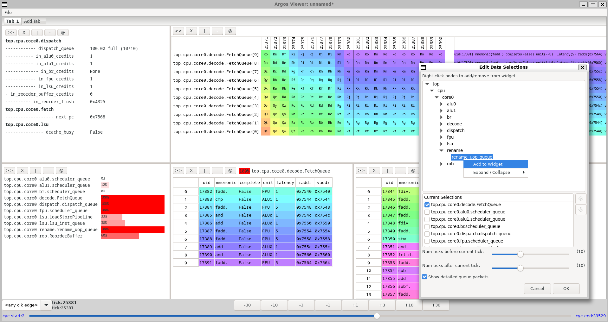
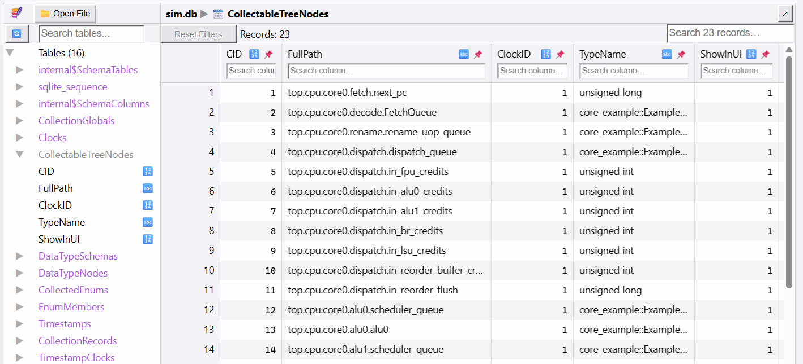
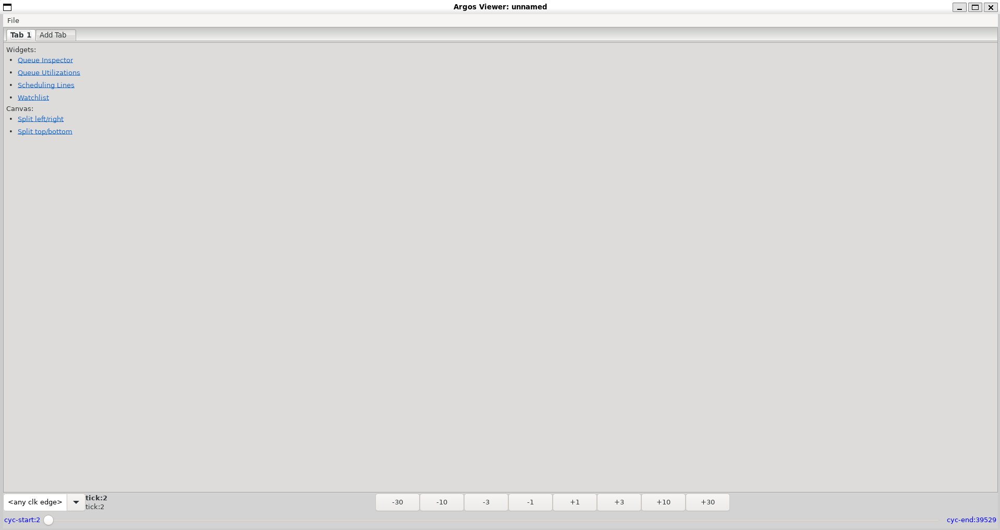
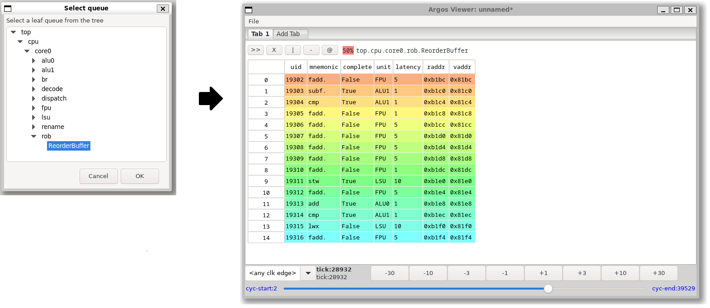
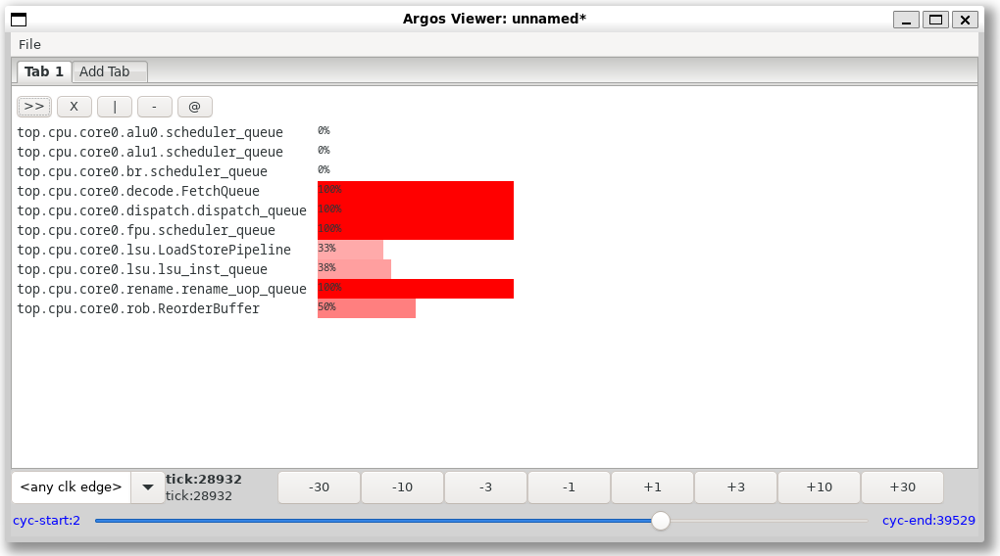
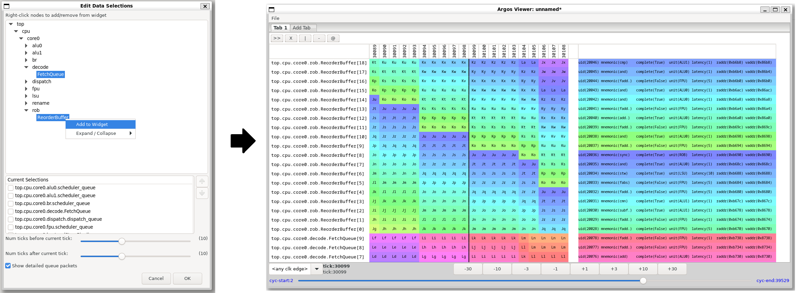
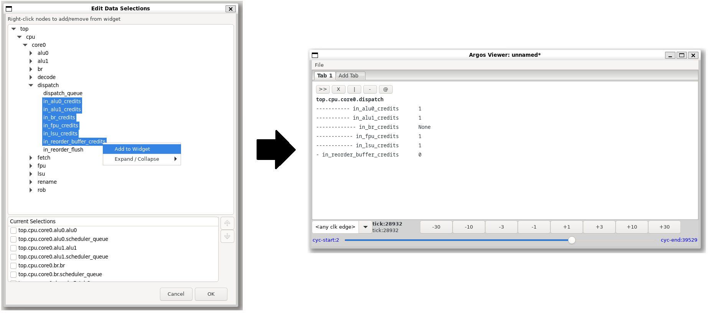

About This Book
SimDB is a high-performance, header-only C++17 module that unifies concurrent data pipelines with SQLite to power scalable simulation data engines, analysis tooling, and UI backends.
This book is written for a specific reader: the domain expert — a hardware architect, performance modeler, or researcher — who needs to move large volumes of simulation data safely and quickly, but who does not write software for a living. SimDB’s guiding principle is that it should be easy to use and hard to misuse. This book follows that same principle.
We build understanding in layers:
-
Part I explains why SimDB exists and how it differs from the alternatives.
-
Parts II and III get you productive with the standalone SQLite interface.
-
Parts IV through VI introduce the concurrent pipeline and app frameworks.
-
Part VII is an end-to-end case study of Argos, SimDB’s flagship collection-and-visualization application.
-
Parts VIII and IX collect patterns, recipes, and reference material.
|
Parts I—IX are drafted in prose with cross-reference links throughout. |
Part I: Why SimDB
1. Introduction
Every simulation produces data, and sooner or later that data becomes the project. Statistics pile up. Traces balloon. Someone wants a live view of what the model is doing, someone else wants to replay a run from an hour ago, and a third person wants to compare a thousand runs at once. The simulator was the interesting part; moving its data around safely and quickly turns into a second, unplanned engineering project.
SimDB exists to make that second project disappear.
The one-sentence version
SimDB is a header-only C++17 module that unifies concurrent data pipelines with SQLite to power scalable simulation data engines, analysis tooling, and user-interface backends.
"Header-only" means there is no library to build and link against separately: you include SimDB’s headers and compile. "Concurrent data pipelines" means you can process data on multiple threads without hand-writing the locking and coordination that usually comes with that. And "SQLite" means everything your simulation emits can land in a single, ordinary database file that any tool, language, or teammate can open later.
The thesis of the whole project fits on one line:
SQLite + Concurrency + Flexibility — safe and fast.
Plenty of libraries give you concurrency. A different set of libraries give you convenient access to SQLite. SimDB’s reason to exist is that it gives you both at once, wired together so the fast path is also the safe path. We will make that claim concrete when we survey the alternatives later in this part.
Who this book is for
This book is written for a specific reader: the domain expert. You might be a hardware architect, a performance modeler, or a researcher. You know your problem domain deeply, you have a real imagination for what you want to build, and you write code to get your work done — but you do not write software for a living, and you would rather not become a concurrency specialist just to save your results.
That reader shaped SimDB’s single most important design imperative: it should be easy to use and hard to misuse. SimDB was deliberately not built "for software engineers, by software engineers". The sharp edges that usually come with threading and databases — race conditions, lock contention, half-written files, transactions that are too small to be fast or too large to be safe — are handled for you by default. You are meant to spend your attention on what to capture and how to look at it, not on the machinery that moves it.
|
You do not need to be a database or threading expert to use this book. Where a concept from either world matters, we introduce it in plain terms the first time it comes up. |
If you are a career software engineer, you are very welcome here too — SimDB will not get in your way, and the later parts expose enough control for advanced use. But when a tradeoff had to be made between raw flexibility and a design that is hard to get wrong, SimDB chose the latter, and this book takes the same stance.
The three pillars
SimDB’s value rests on three ideas that recur throughout the book.
Unified pipelines and SQLite. SimDB pairs a concurrent processing pipeline with native SQLite integration, so database work is batched and routed automatically onto a single database thread. You get the throughput of a purpose-built pipeline and the convenience of a real, queryable database, without the two fighting each other for access.
High performance. SimDB is built for the kind of throughput that fast simulations demand — and it gets there by doing the heavy data work on its own threads, so your simulator itself does not have to be multi-threaded to benefit. It minimizes transaction overhead, eliminates database access contention, and moves data through the pipeline by move (rather than copy) whenever you let it.
A clean break for complex codebases. Large simulation projects tend to accumulate tangled data paths and "just write it to a file" habits that are hard to unwind. SimDB replaces that sprawl with one unified, optimized path from "data produced" to "data stored", which lets teams reach a performant solution with fewer moving parts.
What you can build
SimDB is a foundation, not a single-purpose tool. The same building blocks support a wide range of workflows:
-
Fast, scalable simulation statistics engines.
-
Backends for live dashboards or post-run analysis user interfaces.
-
Simulation state replayers that reconstruct what the model looked like at any point in time.
-
Aggregate analysis across hundreds or thousands of simulation runs.
If your work involves producing simulation data and then needing to store, inspect, replay, or compare it, it very likely fits one of these shapes — and Part VII walks through a complete, real example (Argos) that does several of them at once.
How to read this book
The book is built in layers, and the parts are ordered so each one leans only on what came before.
-
Part I (this part) makes the case for SimDB: the problem it solves, how it compares to the alternatives, and the mental model you will carry everywhere else.
-
Parts Part II and Part III get you productive with the standalone SQLite interface — installing SimDB, building a first program, and working with schemas, inserts, queries, and transactions. This is where code snippets begin.
-
Parts Part IV through Part VI introduce the concurrent pipeline and the application framework that composes pipelines and schemas into cohesive units.
-
Part VII is an end-to-end case study of Argos, SimDB’s flagship collection-and-visualization system.
-
Parts Part VIII and Part IX collect patterns, recipes, and reference material for when you are building in earnest.
|
This part is intentionally concept-first: there is no code in it. If you learn best by running something, you can jump to Part II now and refer back here when you want the "why" behind what you are doing. |
Wherever you start, the next chapter is the place to understand the problem SimDB was built to solve — because the shape of the solution follows directly from it.
2. The Simulation Data Problem
Before we can appreciate what SimDB does, it helps to look squarely at the problem it was built to solve. If you have written a simulator of any real size, some of what follows will feel familiar — perhaps uncomfortably so.
Where the data comes from
A simulation is a data generator. As it runs, it produces a steady stream of things you will want to keep and look at later:
-
Statistics — counters, rates, histograms, and rolled-up metrics that summarize how the model behaved.
-
Traces — fine-grained, often per-cycle records of what happened, used for debugging and detailed analysis.
-
Checkpoints — snapshots of the model’s state, so a run can be inspected or replayed after the fact.
-
Events — notable occurrences worth logging as they happen.
-
User-interface updates — data feeding a live dashboard or a post-run visualization tool.
Individually, none of these is hard to write down. The difficulty is one of scale and speed: a fast simulator can produce this data faster than a naive output path can absorb it. The quicker your model runs, the more the plumbing that carries its data becomes the thing that limits you. It is a common and demoralizing surprise to discover that a carefully optimized simulator spends much of its time simply trying to save its own results.
Two hard problems at once
The reason this plumbing is hard is that it forces two difficult requirements together:
-
The data handling must not stall the simulation. Even a single-threaded model runs fast, and it cannot afford to stop and wait on disk (or on compression, or on a database commit) every time it emits a value. The heavy data work has to happen off to the side — concurrently — so the simulation can keep moving.
-
The data must be persisted durably, in a form you can query and share long after the run is over.
Each of these is manageable on its own. Together they are in tension. To keep up without stalling, the data work must be spread across background threads — but a file on disk fundamentally wants a single writer. Resolve that tension the obvious ways and you get one of two bad outcomes: serialize everything through one lock and the simulation crawls, or let threads race and you get corruption, lost data, and heisenbugs.
|
Your simulator does not need to be multi-threaded for any of this to matter, and you do not need to write threaded code to fix it. Most hardware simulators are single-threaded, and that is perfectly fine: SimDB supplies the concurrency for you, running the data and database work on its own background threads while your model runs on its own. The tension above is SimDB’s problem to solve, not yours. |
The hidden costs of doing it by hand
Reaching for SQLite directly is a reasonable instinct — it is a real database in a single file, with no server to run. But used naively to keep up with a fast simulator, it has sharp edges that are easy to find and hard to remove:
-
Tiny transactions. Committing one row at a time turns every write into a durability barrier. The overhead dwarfs the actual work, and throughput collapses.
-
Implicit file locks. SQLite guards the database file with locks. When several threads try to write at once, they block, retry, or simply fail with "database is locked".
-
Schema-level contention. Coordinating which thread may touch which table, and when, becomes your responsibility — and getting it wrong is subtle.
Handle all of this correctly and you have, in effect, taken a second job as a part-time database concurrency engineer. That is precisely the job SimDB is meant to spare you.
The anti-patterns SimDB replaces
Faced with these costs, large simulation projects tend to drift into a few recognizable habits, none of which age well:
-
"Write everything to files." Each subsystem invents its own output file and its own format. You end up with many formats, many readers, and many bugs — and no single place to ask a question that spans them.
-
Ad hoc binary formats. Fast to write today, painful forever after: they are hard to version, hard to evolve, and hard for anyone (including future you) to read back.
-
Tangled data paths and unbounded coupling. The simulator’s core sprouts tendrils into output code until you can no longer change one without breaking the other.
These patterns are not the sign of a careless team; they are the natural result of the underlying problem being genuinely hard. SimDB’s proposition is that the problem is better solved once, underneath, than re-solved badly in every project. It replaces the sprawl with one unified, highly optimized path — from "data produced" to "data stored" — so teams reach a performant solution with far fewer moving parts.
The obvious question is whether some existing library already does this. That is what the next chapter examines.
3. The Landscape
Chapter 2 ended with a fair question: surely some existing library already solves this? There are many excellent libraries in this space, and it is worth understanding them — both to see why none of them quite fits, and to know when one of them is actually the better choice than SimDB.
When you go looking, you find two separate shelves. On one are toolkits for moving work across threads. On the other are conveniences for talking to SQLite. What you do not find is something that is genuinely both.
Concurrency and dataflow toolkits
The first shelf holds mature, well-respected libraries for concurrency and dataflow:
-
Intel TBB (oneTBB) — a flow graph, parallel algorithms, and concurrent containers.
-
RaftLib — streaming "kernels" connected by data streams.
-
Folly — building blocks such as lock-free queues, futures, and executors.
-
HPX — an asynchronous, many-task runtime.
-
CAF — the actor model for C++.
These are very good at what they do: they help you spread work across threads and pass data between the pieces. What none of them offers is any notion of durable, queryable storage. Persistence is left entirely to you — which drops you right back into the SQLite problems from the previous chapter. They solve the "concurrently" half of the problem and are silent on the "persist it durably" half.
SQLite convenience libraries
The second shelf holds pleasant C++ wrappers over SQLite:
-
SQLiteCpp — a modern, RAII-style C++ wrapper.
-
SOCI — a general database access library with a SQLite backend.
-
sqlite_orm and sqlpp11 — type-safe, ORM- and query-builder-style interfaces.
These make SQL access in C++ genuinely nicer to write and safer to get right. What none of them offers is a concurrency model. They assume you have already decided who writes when; batching, locking, and contention remain your problem. They are a fine choice when database access is simple and occasional — and a poor one for a high-rate simulation data path, because they leave the hardest part exactly where it was.
The gap SimDB fills
Neither shelf solves the combined problem, and the combined problem is the whole point. SimDB exists to unify a safe concurrent pipeline with first-class SQLite, so that:
-
database work is funneled onto a single database thread, with no contention;
-
operations are batched into implicit transactions and retried until they succeed, with no
BEGIN/COMMITfrom you; -
worker threads are shared across independent workloads so they scale together;
-
and the whole thing is approachable enough for a domain expert to use correctly on the first try.
That is the meaning of the one-line thesis from Chapter 1 — SQLite
Concurrency + Flexibility, safe and fast — and it is what no single library on
either shelf provides.
|
Could you assemble a concurrency toolkit from the first shelf and a SQLite wrapper from the second and wire them together yourself? Absolutely — and you would be taking on precisely the hard integration work that SimDB was built to do once, carefully, so that you do not have to. |
When not to use SimDB
Being honest about the fit cuts both ways. SimDB is probably not the right tool when:
-
You do not need persistence at all. If your work is pure in-memory computation with no data to store, a parallel-algorithms library from the first shelf is a lighter choice.
-
You need neither concurrency nor volume. If you write only a handful of rows, occasionally, a thin SQLite wrapper (or raw SQLite) is simpler and perfectly adequate.
-
You need a networked or multi-process database, or streaming across many machines. Systems like a client/server RDBMS or a distributed log (for example, Kafka) target a different problem. SimDB is designed for a single simulation process writing to a single local database file.
Within its target — one simulation process producing data that must be stored, queried, replayed, or compared, quickly and safely — SimDB is purpose-built, and the rest of this book assumes you are in that target.
With the "why" settled, the next chapter gives you the small vocabulary and mental model that everything else in the book builds on.
4. Core Concepts & Mental Model
The rest of this book uses a small, consistent vocabulary. If you internalize the handful of ideas in this chapter, everything that follows — schemas, pipelines, apps, and the Argos case study — will feel like variations on a theme you already know. There is no code here; this is the map, not the territory.
One database to rule them all
The first principle is the simplest: a simulator has one database, and everything goes into it.
Simulation output tends to sprawl. Statistics land in one file, traces in another, a debug log somewhere else, and analysis results in a folder nobody can find six months later. Each format needs its own reader, its own tooling, and its own tribal knowledge. SimDB rejects that sprawl. All of it — statistics, trace data, user-interface updates, analysis results — is consolidated into a single, queryable SQLite database.
That single file is an ordinary SQLite database, which means it is also a durable, portable artifact. You can archive it, copy it to a colleague, or open it with any SQLite-compatible tool in any language, long after the simulation that produced it has finished. The database is the deliverable.
The single database thread
The second principle is the one that makes the rest possible: only one thread ever talks to the database.
A SQLite database lives on the filesystem, and letting many threads hammer a filesystem-backed database at once is never fast enough for a high-volume simulation — you get lock contention, retries, and unpredictable stalls. So SimDB does the opposite of what a naive design would do: instead of many threads racing for the database, every database operation is funneled onto one dedicated database thread (and there is only ever one, or none at all).
Concentrating database work on a single thread is what lets SimDB hand you three guarantees that would otherwise be your problem to enforce:
-
No user-facing transactions required. You never write
BEGINorCOMMIT. SimDB gathers many operations together and commits them as large, efficient implicit transactions, which is dramatically faster than many tiny ones. -
Retry-on-fail. If the database is momentarily busy or a table is locked, SimDB keeps retrying the work until it succeeds, rather than failing back to you.
-
No manual concurrency management. You do not coordinate access to SQLite, reason about file locks, or worry about schema-level contention. Safe, high-throughput execution under heavy parallel load is the default.
|
"Only one database thread" is a rule about writing to the database, not a limit on your simulation’s parallelism. Your data-processing work can run across as many threads as you like; it is only the final hand-off to SQLite that is serialized — on purpose. |
The object model
SimDB gives you four kinds of building blocks. From the outside in:
-
An App is a self-contained unit of functionality that owns a database schema and, typically, one pipeline. A logger is an app; a statistics collector is an app; a UI backend is an app. Several producers usually fan in through multiple pipeline heads on that single pipeline rather than through multiple pipelines per app. The guiding paradigm is one simulator with many apps, all writing to the single shared database.
-
A Pipeline is an ordered arrangement of stages that transforms data on its way to the database.
-
A Stage is one step of work. An ordinary stage runs on its own thread. A special DatabaseStage is the only kind of stage allowed to write to the database, and every database stage — from every app — runs on that one shared database thread.
-
Stages are wired together with ports (a stage’s typed inputs and outputs) and queues. A queue is a thread-safe, first-in-first-out hand-off that sits between one stage’s output and the next stage’s input.
Put together, data flows from your simulation, through one or more apps' pipelines, and finally onto the single database thread that persists it:
Your simulation
|
| hand data to an app (moved when possible, copied when needed)
v
App .......... owns a Schema and one or more Pipelines
| (a simulator may run many apps over ONE database)
v
Pipeline ..... a chain of Stages connected by thread-safe Queues
|
| [Stage] --queue--> [Stage] --queue--> [DatabaseStage]
| own thread own thread shared DB thread
v
Single database thread
| every DatabaseStage, from every app, runs here and
| ONLY here; it batches writes into implicit transactions
| and retries them until they succeed
v
One SQLite database (the single source of truth)
The threading model
The durable rule of SimDB’s threading is the one you already know: there is exactly one database thread, shared by every database stage, and you cannot ask for a private one. That constraint is not a limitation to work around — it is the very thing that keeps database access fast and contention-free.
Around that fixed point, the pipeline’s other stages run on ordinary worker threads. How those worker threads are allocated is an area SimDB is still evolving: today the thread count grows with the amount of pipeline work you create, so running many apps at once is not yet as thread-efficient as it will be. Part V returns to this with the specifics; the takeaway here is simply that the single database thread is the permanent anchor of the model.
Move-only by default
The last idea is about performance. Data travels through a pipeline’s queues by move whenever possible: instead of copying a payload from one stage to the next, SimDB transfers ownership of it, which avoids duplicating potentially large buffers. When you genuinely need to keep your own copy of the data, you can copy instead — SimDB supports both — but the fast path, and the default you should reach for, is to move.
This is why you will often see large payloads (vectors of statistics, compressed byte buffers) flow through a SimDB pipeline with almost no copying overhead. Keep "move when you can, copy when you must" in mind and your pipelines will be fast by construction.
A quick glossary
For reference, here are the core terms as this book uses them:
- App
-
A self-contained unit that owns a schema and one pipeline (often with multiple pipeline heads). Many apps share one database.
- Schema
-
The definition of your database’s tables and columns.
- DatabaseManager
-
The object that owns the SQLite connection and applies your schema.
- Pipeline
-
An ordered set of stages that transforms and routes data toward the database. One app, one pipeline is the usual layout.
- Stage
-
One step of work in a pipeline, running on its own thread.
- DatabaseStage
-
The special stage that may write to the database; all database stages run on the single shared database thread.
- Port
-
A typed input or output on a stage.
- Queue (ConcurrentQueue)
-
The thread-safe FIFO that connects one stage’s output port to the next stage’s input port.
- Pipeline head
-
An unbound input port on the first stage — where producers
emplacework into the pipeline. One pipeline may expose several heads. - Database thread
-
The single dedicated thread through which all database work flows.
Part II: Getting Started
5. Installing SimDB
With the "why" behind us, it is time to get SimDB onto your machine and compile something. This chapter covers dependencies; the next covers wiring SimDB into your own build.
What "header-only" means for you
SimDB is a header-only C++17 library. There is no SimDB .a or .so to build
and link against — you point your compiler at SimDB’s headers and that is the
whole library. What SimDB does need is a small set of ordinary dependencies at
build time:
-
a C++17 compiler (GCC or Clang);
-
SQLite3 (version 3.19 or newer), the database engine SimDB builds on;
-
zlib, used for compression;
-
a threads library (pthreads on Linux), for the pipeline machinery.
You only need clang-format (specifically clang-format-19) if you intend to
contribute changes back to SimDB; it is not required to use the library.
System packages (Ubuntu / Debian)
On a Debian-based system, install the dependencies with apt:
sudo apt-get update
sudo apt-get install -y \
cmake \
libsqlite3-dev \
zlib1g-dev \
build-essential(Add clang-format-19 to that list if you plan to contribute.)
Conda environments
If you work in conda, you can pull the same toolchain into an environment instead. To add the dependencies to an environment you already have:
conda activate <your-env-name>
conda install -y \
cmake \
sqlite \
zlib \
compilersOr to create a fresh environment for SimDB from scratch:
conda create -n simdb -y \
cmake \
sqlite \
zlib \
compilers
conda activate simdb|
Because SimDB is header-only, "installing" it can mean two different things:
simply making its headers visible to your compiler, or running a formal install
step so it can be found with CMake’s |
6. Building & CMake Integration
SimDB uses CMake, and the smoothest way to consume it is from CMake too. This chapter shows how to install SimDB and then link it into your own project with a single target.
Installing SimDB so CMake can find it
From a clone of the SimDB repository, configure a build and install it. For a system-wide install:
cmake -DCMAKE_BUILD_TYPE=Release -DCMAKE_INSTALL_PREFIX=/usr/local/ ..
sudo make installOr, if you are working inside a conda environment, install into that environment’s prefix instead:
conda activate <your-env-name>
cmake --install . --prefix $CONDA_PREFIXInstalling places SimDB’s headers and a CMake package configuration where
find_package can locate them.
Linking SimDB into your project
SimDB exports a single CMake target, SimDB::simdb. In your project’s
CMakeLists.txt:
cmake_minimum_required(VERSION 3.19)
project(my_simulator LANGUAGES CXX)
set(CMAKE_CXX_STANDARD 17)
set(CMAKE_CXX_STANDARD_REQUIRED ON)
find_package(SimDB REQUIRED)
add_executable(my_simulator main.cpp)
target_link_libraries(my_simulator PRIVATE SimDB::simdb)That one target_link_libraries line is all you need. Because SimDB::simdb is
an interface target, linking against it automatically pulls in SimDB’s include
directories and its transitive dependencies — SQLite3, zlib, and the threads
library — so you do not list them yourself.
|
SimDB requires C++17. Setting |
Debug and Release builds
Choose a build type with CMAKE_BUILD_TYPE, exactly as you would for any CMake
project:
# An optimized build
cmake -DCMAKE_BUILD_TYPE=Release ..
# A debug build (no optimization, full debug info)
cmake -DCMAKE_BUILD_TYPE=Debug ..Use Release for anything performance-sensitive — which, given why you are
reaching for SimDB, is most of the time. Keep a Debug build around for
development. One thing worth knowing early: SimDB’s own build treats warnings as
errors (-Wall -Wextra -Werror), and Release builds surface issues — such as
unused variables — that a Debug build may let slide. If a file compiles in
Debug but fails in Release, an unused parameter or variable is the usual
culprit.
7. Your First Program
Enough setup — let us write something that runs. Here is a complete SimDB program that defines a table, creates a database, writes a handful of rows, and reads them back. It uses only SimDB’s SQLite interface; there is no pipeline here at all, which is the point: SimDB is useful the moment you want a database, and the concurrency machinery is something you add later, when you need it.
#include "simdb/sqlite/DatabaseManager.hpp"
#include <iostream>
int main()
{
using dt = simdb::SqlDataType;
// 1. Describe the schema: one table with two columns.
simdb::Schema schema;
auto& tbl = schema.addTable("Stats");
tbl.addColumn("Cycle", dt::uint64_t);
tbl.addColumn("Value", dt::double_t);
// 2. Create the database file and apply the schema.
simdb::DatabaseManager db_mgr("first.db", true /* create a new database */);
db_mgr.appendSchema(schema);
// 3. Insert a few rows.
for (uint64_t cycle = 0; cycle < 5; ++cycle)
{
db_mgr.INSERT(
SQL_TABLE("Stats"),
SQL_COLUMNS("Cycle", "Value"),
SQL_VALUES(cycle, cycle * 1.5));
}
// 4. Read them back.
auto query = db_mgr.createQuery("Stats");
uint64_t cycle = 0;
double value = 0.0;
query->select("Cycle", cycle);
query->select("Value", value);
std::cout << "Stored " << query->count() << " rows:\n";
auto results = query->getResultSet();
while (results.getNextRecord())
{
std::cout << " cycle " << cycle << " -> " << value << "\n";
}
return 0;
}What it does
Walk through the program in the order it runs:
-
Define the schema.
SchemaandaddTable/addColumnbuild an in-memory description of your tables and columns; nothing touches disk yet.SqlDataType(aliased here todtfor brevity) names the column types. -
Create the database. Constructing a
simdb::DatabaseManageron a file path opens the connection; the second argumenttrueasks for a fresh database.appendSchemathen creates the tables. (You can callappendSchemamore than once to add tables later.) -
Insert rows. The
INSERTmacro-based API names a table, its columns, and the matching values. It is the most direct way to write a row; Part III introduces prepared statements for high-volume inserts. -
Read them back.
createQuerytargets a table;selectbinds each column to a variable that is refreshed on everygetNextRecord();count()returns how many rows match. Constraints, ordering, and limits come in Part III.
Building and running it
Pair the program with the consumer CMakeLists.txt from the previous chapter,
then configure, build, and run:
cmake -DCMAKE_BUILD_TYPE=Release -B build
cmake --build build
./build/my_simulatorYou should see five rows printed, and a first.db file left behind — an
ordinary SQLite database you can open with any SQLite tool:
sqlite3 first.db "SELECT * FROM Stats;"|
Run the program from a scratch or build directory rather than from inside a source tree. SimDB programs create their database file in the working directory, and you would rather not scatter these files across your source. |
That is the whole SQLite interface in miniature. Part III revisits each of these steps — schemas, inserts, queries, transactions, and blobs — in depth.
8. Running the Regression Tests
SimDB ships with a regression suite, and it doubles as a library of small, authoritative worked examples. Building it once up front is the best way to confirm your toolchain is healthy.
Building the suite
From a build directory, build the simdb_regress target to compile and run the
tests:
# Release
mkdir release
cd release
cmake -DCMAKE_BUILD_TYPE=Release ..
make simdb_regressThe same works for a Debug build (mkdir debug, cmake -DCMAKE_BUILD_TYPE=Debug
..). Under the hood the suite is registered with CTest, so you can also run and
filter individual tests with ctest once they are built.
Worked examples for the SQLite interface
Everything we have covered so far — and everything in Part III — has a small,
complete, runnable counterpart under test/sqlite/. These are the authoritative
worked examples for SimDB’s SQLite interface: each is a self-contained main.cpp
that exercises exactly one area.
-
test/sqlite/Schema/main.cpp— defining tables, columns, indexes, and default values, and reconnecting to an existing schema. -
test/sqlite/Insert/main.cpp— theINSERTAPI and prepared inserts. -
test/sqlite/Query/main.cpp— queries: selecting columns,WHEREconstraints, ordering, limits, and compound clauses. -
test/sqlite/Delete/main.cpp— deleting records with constraints. -
test/sqlite/UInt64/main.cpp— full-range 64-bit unsigned handling.
Because they are part of the regression suite, they are guaranteed to compile and
pass, so they never drift from the current API. As you read Part III, keep the
matching program open alongside the chapter. (SimDB’s higher-level pipeline
programs live under examples/; we turn to those in Part IV, once pipelines are
on the table.)
A note on where you run things
SimDB programs write their database file into the current working directory. Run
them from a build directory or a scratch directory, not from the root of a source
tree, so these files do not litter your checkout. This is a small habit that
saves a lot of git status noise later.
With SimDB installed, building, and its test programs at your fingertips, you are ready for Part III, where we return to the SQLite interface and cover it in full.
Part III: The SQLite Interface
9. Defining a Schema
Every SimDB database begins with a schema: a description of the tables you want
and the columns each one holds. In SimDB you write that description in ordinary
C++ — there are no SQL CREATE TABLE strings to compose, and no chance of a
typo in a keyword surviving until runtime. A simdb::Schema is a plain in-memory
object; defining one touches no files and opens no connections. It becomes a real
database only when you hand it to a DatabaseManager, which is the subject of the
next chapter.
A first schema
Here is a small schema with a single table:
#include "simdb/sqlite/DatabaseManager.hpp"
simdb::Schema schema;
using dt = simdb::SqlDataType;
auto& tbl = schema.addTable("Instructions");
tbl.addColumn("PC", dt::uint64_t);
tbl.addColumn("Mnemonic", dt::string_t);
tbl.addColumn("Latency", dt::uint32_t);addTable returns a reference to the new Table, and addColumn names a column
and gives it a type. That is the entire required vocabulary; everything else in
this chapter is optional refinement.
Column data types
Column types come from the simdb::SqlDataType enumeration. Aliasing it to dt
(as above) keeps definitions readable. The available types are:
| Type | Use it for |
|---|---|
|
32-bit signed / unsigned integers |
|
64-bit signed / unsigned integers (ticks, cycles, addresses) |
|
Floating-point values |
|
Text |
|
Arbitrary binary payloads (covered later in this part) |
SimDB maps these onto SQLite’s storage classes for you and preserves full
integer width — including the entire range of uint64_t, which raw SQLite does
not handle gracefully.
The implicit Id primary key
By default, every table you create is given an auto-incrementing 64-bit integer
primary key named Id. You do not declare it, and in fact you cannot add a
column named Id yourself — SimDB manages it. This Id is what lets you fetch
a row directly later (for example with findRecord), and it is why a freshly
inserted record already has a stable identity.
If you want a different column to be the primary key, say so:
tbl.setPrimaryKey("PC"); // use PC as the primary key instead of IdAnd if a table needs no primary key at all, remove it:
tbl.unsetPrimaryKey();Default values
A column can carry a default that is used whenever an insert omits it:
auto& reports = schema.addTable("Reports");
reports.addColumn("Name", dt::string_t);
reports.addColumn("StartTick", dt::uint64_t);
reports.addColumn("EndTick", dt::uint64_t);
reports.setColumnDefaultValue("StartTick", 0);
reports.setColumnDefaultValue("Name", "unnamed");The default’s type must match the column’s type. Blob columns cannot have defaults — there is no meaningful literal for arbitrary binary data.
Indexes
If you will query a table by a particular column (or combination of columns), add an index so those lookups stay fast as the table grows:
reports.createIndexOn("StartTick"); // single-column index
reports.createCompoundIndexOn({"StartTick", "EndTick"}); // multi-column indexIndexes speed up reads at a small cost to writes and file size, so add them for the columns you actually filter or sort on — not reflexively for every column.
Uniqueness
To reject duplicate values in a column, mark it unique:
reports.ensureUnique("Name");A fluent style
Because the Table-returning methods all return the table, you can chain a
definition into a single expression when that reads more clearly:
schema.addTable("Events")
.addColumn("Tick", dt::uint64_t)
.addColumn("Kind", dt::string_t)
.setColumnDefaultValue("Kind", "generic");Composing and growing a schema
Schemas are composable. appendSchema merges one schema’s tables into another,
which is handy when different modules each contribute their own tables:
simdb::Schema combined;
combined.appendSchema(schema_from_module_a);
combined.appendSchema(schema_from_module_b);Appending fails if it would create two tables with the same name but different columns.
And, as the next chapter shows, you are not limited to defining everything up front: a
DatabaseManager accepts appendSchema too, so you can add tables to a live
database as your program discovers it needs them.
With a schema in hand, the next step is to turn it into an actual database file.
10. The DatabaseManager
A schema only describes tables; the simdb::DatabaseManager turns that
description into a real database file and is your entry point for everything you
do with it afterward. It owns the underlying database connection, applies
schemas, and is the object you call to insert, query, and manage records. In a
typical program there is one DatabaseManager per database file, and it stays
alive for as long as you need that database open.
Opening a database
The constructor takes a file name and a flag that controls what happens if the file already exists:
// Create a brand-new database, replacing any file of the same name.
simdb::DatabaseManager db_mgr("sim.db", true /* force_new_file */);There are three cases worth knowing:
-
Create fresh (
force_new_file == true). If the file exists it is replaced, and you start from an empty database. This is what you want for a program that produces a database on each run. -
Open existing (
force_new_file == false, the default). If the file already exists, the manager reconnects to it and rebuilds the schema from the file itself. If the file does not exist, a new empty database is created. -
Default name. Both arguments are optional; a bare
simdb::DatabaseManager db_mgr;opens (or creates) a file namedsim.db.
|
When you open a database file that already existed without forcing a new file,
its schema is fixed: you can read and write records, but you cannot
|
Applying a schema
With a manager in hand, appendSchema creates the tables described by a schema:
simdb::Schema schema;
// ... define tables ...
simdb::DatabaseManager db_mgr("sim.db", true);
db_mgr.appendSchema(schema);Unlike Schema::appendSchema (which only merges descriptions in memory),
DatabaseManager::appendSchema immediately realizes the tables in the database
file. You may call it more than once on a database you created, which is how you
add tables partway through a run as your program discovers it needs them.
The schema is persisted for you
SimDB records the schema inside the database itself, in a pair of internal
bookkeeping tables. That is why reconnecting to an existing file just works:
the manager reads those tables back and reconstructs an equivalent Schema
automatically, with no need to redeclare it in code:
simdb::Schema orig_schema;
// ... define tables ...
simdb::DatabaseManager orig_db_mgr("orig.db", true); // Create new DB
orig_db_mgr.appendSchema(orig_schema);
simdb::DatabaseManager diff_db_mgr("orig.db", false); // Connect to same DB
assert(orig_schema == diff_db_mgr.getSchema());The manager is the hub
Nearly everything else in this part goes through the DatabaseManager. From it
you:
-
insert rows with
INSERTandprepareINSERT(next chapter); -
read rows with
createQuery, and fetch a single row by itsIdwithfindRecord(the querying chapter); -
group operations atomically with
safeTransaction(the transactions chapter).
Lifecycle
The connection is opened in the constructor and closed automatically when the
DatabaseManager is destroyed — ordinary RAII, so there is no explicit "close"
call to remember. The database file itself, of course, persists on disk after
the program exits, ready to be reopened later or inspected with other tools.
With a live database in hand, we can start putting data into it.
11. Inserting Data
SimDB gives you two ways to write rows: a one-shot INSERT that is convenient
for occasional writes, and a prepared insert that you set up once and reuse for
high-volume writing. Both go through the DatabaseManager, and both are typed — you hand SimDB C++ values, not SQL strings.
One-shot inserts
The INSERT API names a table, the columns you are setting, and the matching
values:
auto record = db_mgr.INSERT(
SQL_TABLE("Instructions"),
SQL_COLUMNS("PC", "Mnemonic", "Latency"),
SQL_VALUES(0x400100ull, "addi", 1u));The record handle
INSERT returns a handle to the row it created — a SqlRecord. From it you can
read back typed properties, and you can modify the row in place; a setProperty
call writes straight through to the database:
int32_t id = record->getId(); // the auto-assigned Id
uint32_t latency = record->getPropertyUInt32("Latency");
record->setPropertyUInt32("Latency", 2u); // updates the stored rowThere is an accessor per column type — getPropertyInt32, getPropertyUInt64,
getPropertyDouble, getPropertyString, and so on — along with a matching
setProperty for each. Blob columns use the templated
getPropertyBlob<T>("col"), covered in the blobs chapter.
Insert shorthands
Two shorter forms of INSERT are handy in the right situation:
// Supply every column, in the table's schema order (no SQL_COLUMNS needed).
db_mgr.INSERT(SQL_TABLE("Instructions"), SQL_VALUES(0x400104ull, "sub", 1u));
// Insert a row that takes each column's default value.
db_mgr.INSERT(SQL_TABLE("Instructions"));The values-only form is terser but positional — the values must line up with
the columns exactly as the schema declares them — so prefer the explicit
SQL_COLUMNS form when clarity matters, or to future-proof your code against
schema changes e.g. added/reordered columns.
Prepared inserts for high volume
When you are writing many rows — the common case in a simulation — preparing
the statement once and reusing it is far faster than issuing a fresh INSERT
each time. prepareINSERT compiles the statement up front; you then set column
values by position and call createRecord for each row:
auto inserter = db_mgr.prepareINSERT(
SQL_TABLE("Instructions"),
SQL_COLUMNS("PC", "Mnemonic", "Latency"));
for (const auto& inst : instructions)
{
inserter->setColumnValue(0, inst.pc); // column 0 == "PC"
inserter->setColumnValue(1, inst.mnemonic); // column 1 == "Mnemonic"
inserter->setColumnValue(2, inst.latency); // column 2 == "Latency"
inserter->createRecord();
}setColumnValue takes a zero-based index into the column list you passed to
prepareINSERT, and createRecord returns the new row’s Id. If you prefer to
set every column in one call, createRecordWithColValues does exactly that:
int32_t id = inserter->createRecordWithColValues(0x400108ull, "xor", 1u);As with INSERT, there is a prepareINSERT(SQL_TABLE("…")) overload that binds
every column in schema order when you do not want to spell out SQL_COLUMNS.
Choosing between them
Reach for one-shot INSERT for setup rows, configuration, and any place you are
writing a handful of records. Reach for prepareINSERT in the hot path, where
the same statement runs thousands or millions of times. To push bulk-insert
throughput even higher, wrap the loop in a single transaction — the subject of
the transactions chapter.
|
SimDB owns a couple of internal bookkeeping tables (their names begin with
|
12. Querying Data
Reading data back is where SimDB’s typed, string-free style pays off most. You
build a query against a table, bind C++ variables to the columns you want, add
any constraints, and iterate the results — all without composing a SELECT
statement by hand.
Selecting columns and iterating
createQuery targets a table. You then call select once per column, binding
each to a variable of the matching type. The trick to the model is that those
variables are bound once and refreshed on every step of the iteration:
auto query = db_mgr.createQuery("Instructions");
uint64_t pc = 0;
query->select("PC", pc);
std::string mnemonic;
query->select("Mnemonic", mnemonic);
uint32_t latency = 0;
query->select("Latency", latency);
auto results = query->getResultSet();
while (results.getNextRecord())
{
// pc, mnemonic, and latency now hold this row's values.
std::cout << "0x" << std::hex << pc << ": " << mnemonic
<< " (latency " << std::dec << latency << ")\n";
}Each successful getNextRecord() populates the bound variables with the next
row; the loop ends when it returns false. If you only need a tally rather than
the rows themselves, count() returns how many records match:
const int n = query->count();Constraints (the WHERE clause)
Narrow a query by adding typed constraints. There is a method per column type — addConstraintForInt, addConstraintForUInt32, addConstraintForUInt64,
addConstraintForDouble, addConstraintForString — each taking a column, a
comparison operator, and a value:
query->addConstraintForUInt32("Latency", simdb::Constraints::GREATER, 1);
query->addConstraintForString("Mnemonic", simdb::Constraints::EQUAL, "addi");The simdb::Constraints operators are EQUAL, NOT_EQUAL, LESS,
LESS_EQUAL, GREATER, and GREATER_EQUAL. Multiple constraints combine with
AND. To clear them and reuse the query, call resetConstraints().
Set membership
To match against a set of values, use simdb::SetConstraints::IN_SET or
NOT_IN_SET with a brace-enclosed list:
query->addConstraintForString(
"Mnemonic", simdb::SetConstraints::IN_SET, {"addi", "sub", "xor"});Matching doubles
Floating-point equality is treated with care. addConstraintForDouble takes an
extra boolean that enables fuzzy matching, so you can compare against a stored
double without being defeated by machine-precision rounding:
auto samples = db_mgr.createQuery("Samples");
samples->addConstraintForDouble("Value", simdb::Constraints::EQUAL, 3.14, /* fuzzy */ true);
// Query will now return rows where the Value is within machine epsilon of 3.14Ordering and limits
Sort results with orderBy (call it more than once for tie-breakers), and cap
the number of rows with setLimit:
query->orderBy("Latency", simdb::QueryOrder::DESC);
query->orderBy("PC", simdb::QueryOrder::ASC);
query->setLimit(100);resetOrderBy() and resetLimit() undo these, mirroring resetConstraints().
Combining clauses with OR
Constraints are AND-ed by default. When you need OR, build each group of
constraints, release it as a clause, and combine the clauses explicitly:
query->addConstraintForUInt32("Latency", simdb::Constraints::EQUAL, 1);
query->addConstraintForString("Mnemonic", simdb::Constraints::EQUAL, "addi");
auto clause_a = query->releaseConstraintClauses();
query->addConstraintForString("Mnemonic", simdb::Constraints::EQUAL, "sub");
auto clause_b = query->releaseConstraintClauses();
// (Latency == 1 AND Mnemonic == "addi") OR (Mnemonic == "sub")
query->addCompoundConstraint(clause_a, simdb::QueryOperator::OR, clause_b);Fetching a single row by Id
When you already know a row’s Id — for example one returned by createRecord — you do not need a query at all. Ask the DatabaseManager for it directly:
auto record = db_mgr.findRecord("Instructions", id);This hands back the same SqlRecord handle described in the previous chapter,
with its typed getProperty* accessors.
Deleting matching rows
A query can also delete the rows it selects. Constrain it to the rows you want
gone, then call deleteResultSet():
auto stale = db_mgr.createQuery("Instructions");
stale->addConstraintForUInt32("Latency", simdb::Constraints::EQUAL, 0);
stale->deleteResultSet();With no constraints, that would empty the table — so double-check your constraints before deleting.
Reusing a query
A query object is reusable. Reset whichever parts you want to change — constraints, ordering, or limit — and run it again; and within a single run,
getResultSet() can be iterated, then reset() and iterated again from the top.
13. Transactions
By default, each write you make to a SQLite database is its own committed
transaction. That is fine for the occasional row, but it is ruinous for
throughput when you are writing thousands or millions of them: the per-commit
overhead dominates. Grouping many operations into a single transaction is the
single most effective thing you can do for write performance, and SimDB makes it
both easy and safe with safeTransaction.
Grouping work with safeTransaction
safeTransaction takes a function (typically a lambda) and runs everything
inside it within one BEGIN/COMMIT:
auto inserter = db_mgr.prepareINSERT(
SQL_TABLE("Instructions"),
SQL_COLUMNS("PC", "Mnemonic", "Latency"));
db_mgr.safeTransaction(
[&]()
{
for (const auto& inst : instructions)
{
inserter->setColumnValue(0, inst.pc);
inserter->setColumnValue(1, inst.mnemonic);
inserter->setColumnValue(2, inst.latency);
inserter->createRecord();
}
});Here every createRecord in the loop is folded into a single commit. The same
loop without a transaction would commit once per row; wrapping it as above can be
orders of magnitude faster for large batches.
What makes it "safe"
The name is not decoration — safeTransaction handles the awkward parts of real
concurrent database access for you:
-
Automatic retry on contention. If the database is momentarily busy or locked (for instance, another thread is mid-write), SimDB does not fail the call and hand you a "database is locked" error to cope with. It waits briefly and retries the whole transaction until it succeeds. Transient contention becomes invisible.
-
Safe to nest. Calling
safeTransactionwhile already inside one does not start a second, illegal nested transaction; the inner call simply joins the outer one, and the commit happens once when the outermost call finishes. This means helper functions can each wrap their work insafeTransactionwithout worrying about who called whom. -
Serialized access. An internal lock guards the connection, so transactions from different threads are applied one at a time rather than colliding.
Together these mean you get batching and correctness without writing any retry loops, lock handling, or nesting bookkeeping yourself — the same "easy to use, hard to misuse" bargain SimDB makes everywhere.
A note on pipelines
When you move to the concurrent pipeline in Part IV, you will rarely call
safeTransaction by hand on the hot path. SimDB’s database pipeline stages
already batch the rows flowing through them into transactions on the dedicated
database thread, applying exactly this technique for you. safeTransaction
remains the right tool whenever you are writing to the database directly, outside
of a pipeline.
14. Blobs, Compression & Serialization
Not everything worth storing is a scalar. Simulations routinely produce
bulk data — an array of samples, a packed snapshot of some structure, a run of
values captured over a window of time. A blob_t column stores that kind of
payload as raw bytes, and it is how SimDB keeps large, structured data compact
inside an ordinary database file.
Storing and reading a vector
The simplest blob is a std::vector. Pass one straight into SQL_VALUES, and
SimDB stores its bytes:
std::vector<int> samples = collect_samples();
db_mgr.INSERT(
SQL_TABLE("Waveforms"),
SQL_COLUMNS("Samples"),
SQL_VALUES(samples));Reading it back is symmetric: getPropertyBlob<T> returns a std::vector<T> of
the element type you ask for:
auto record = db_mgr.findRecord("Waveforms", id);
std::vector<int> samples = record->getPropertyBlob<int>("Samples");You read with the same element type you wrote. A blob is just bytes; SimDB does
not record what those bytes meant, so asking for the wrong T gives you back
nonsense (or throws, if the byte count does not divide evenly). Store
trivially-copyable data — plain values or POD structs — and never store
pointers, whose addresses are meaningless once reloaded.
Raw bytes with SqlBlob
When your data is not already a vector — a packed struct, or an existing buffer — describe it with a simdb::SqlBlob, which is just a pointer and a byte count:
simdb::SqlBlob blob(samples); // from a vector...
db_mgr.INSERT(SQL_TABLE("Waveforms"), SQL_COLUMNS("Samples"), SQL_VALUES(blob));The same is available on an existing record through setPropertyBlob, either
from a vector or from a raw pointer and length:
record->setPropertyBlob("Samples", other_vector); // from a vector
record->setPropertyBlob("Samples", data_ptr, num_bytes); // from raw bytesBecause large payloads are expensive to copy, you can std::move a vector into
SQL_VALUES to hand its buffer to SimDB directly rather than duplicating it:
db_mgr.INSERT(SQL_TABLE("Waveforms"), SQL_COLUMNS("Samples"), SQL_VALUES(std::move(samples)));Compression
For genuinely large payloads, SimDB ships zlib-based helpers so you can shrink
the data before it lands on disk. Compress into a std::vector<char>, store that,
and decompress on the way back out:
// Writing: compress, then store the compressed bytes.
std::vector<double> series = collect_series();
std::vector<char> packed;
simdb::compressData(series, packed);
db_mgr.INSERT(SQL_TABLE("Series"), SQL_COLUMNS("Data"), SQL_VALUES(packed));// Reading: pull the compressed bytes back, then decompress into the original type.
auto record = db_mgr.findRecord("Series", id);
std::vector<char> packed = record->getPropertyBlob<char>("Data");
std::vector<double> series;
simdb::decompressData(packed, series);compressData takes an optional level — simdb::CompressionLevel::FASTEST,
DEFAULT, HIGHEST, or DISABLED — letting you trade CPU time against file
size. Compression is entirely your choice: SimDB provides the tools, and you
decide when a payload is big enough to be worth compressing.
This blob-plus-compression pattern is the foundation for storing high-volume simulation data efficiently, and it is exactly what SimDB’s higher layers build on to keep large captures small.
15. Inspecting & Dumping Databases
When something looks wrong — a table that should have rows but does not, a value that is not what you expected — you want to look inside the database quickly.
Reading the database at the command line
Because a SimDB database is a standard SQLite file, you are never locked into C++
for inspection. The sqlite3 command-line tool queries it directly:
sqlite3 sim.db "SELECT * FROM Instructions LIMIT 10;"And any language with a SQLite binding — Python included — can open the same file to analyze or cross-check its contents. This openness is what lets separate tooling, such as a visualization front-end, read a database that a C++ simulation produced.
Third-party SQLite viewers
For interactive browsing — clicking through tables, running ad-hoc `SELECT`s, sorting and filtering by hand — a graphical SQLite viewer is often the best way to get oriented. These are all third-party tools, not part of SimDB, but because a SimDB database is a plain SQLite file they open it without any special handling. A few worth knowing:
-
DB Browser for SQLite (also called "DB4S" or
sqlitebrowser) — a free, open-source, cross-platform desktop application. A good default: browse and edit tables, run queries, and view schema in one window. -
SQLiteStudio — free, open-source, and cross-platform, with a tabbed UI for working across several tables and databases at once.
-
DBeaver — a cross-platform database tool (free Community Edition) that handles SQLite alongside many other databases; handy if you already use it for other work.
-
DataGrip — JetBrains' commercial database IDE, with strong query editing and navigation, if you work in that ecosystem.
-
Datasette — an open-source tool that serves a SQLite file as a browsable web application, convenient for read-only exploration and quick sharing.
|
If you just want a quick look and prefer not to install anything, the |
This closes our tour of the standalone SQLite interface. You can now define schemas, open databases, write and read records, batch work into transactions, store bulk payloads, and inspect the result — all without a single pipeline. In Part IV we add the other half of SimDB: the concurrent pipeline that moves this data off the critical path and onto its own threads.
Part IV: Concurrent Pipelines
16. Pipeline Fundamentals
Part III gave you a database. This part gives you the other half of SimDB: a way to move data into that database without ever making your simulation wait on it. A pipeline is a chain of processing stages, each running on its own thread, passing data along through queues. The simulation hands work to the front of the pipeline and returns to what it was doing; the stages do the transforming, compressing, and writing behind the scenes. Before we build one, this chapter introduces the fundamental unit — the stage — and the small contract that governs how it runs.
What a stage is
A stage is a unit of work with typed input and output ports. You create one by
subclassing simdb::pipeline::Stage and implementing a single method, run_.
Every combination of ports is allowed: a stage may have multiple inputs, multiple
outputs, or none at all — a stage with no input port might generate data; one
with no output port might be a sink that only writes.
We cover how ports are declared and wired in the next two chapters. For now, the
important thing is the shape of a stage and what its run_ method promises.
The greedy run loop
SimDB runs each stage on its own thread and calls run_ over and over. Your job
in run_ is to do one unit of work if there is any, and to tell SimDB what
happened by returning a PipelineAction:
class MyStage : public simdb::pipeline::Stage
{
private:
simdb::pipeline::PipelineAction run_(bool force) override
{
Widget w;
if (input_queue_->try_pop(w))
{
// ... transform w, push results to an output port ...
return simdb::pipeline::PipelineAction::PROCEED; // did work; call me again now
}
return simdb::pipeline::PipelineAction::SLEEP; // nothing to do; let me nap
}
};The two return values drive everything:
-
PROCEEDmeans "I did something, and there may be more." SimDB immediately callsrun_again, with no delay. A busy stage is therefore serviced greedily — it drains its input as fast as it can. -
SLEEPmeans "I had nothing to do." The stage’s thread sleeps briefly (100 ms by default), then wakes and tries again.
This is the whole scheduling model. There is no manual thread management, no
condition-variable bookkeeping — you write a run_ that processes one item and
reports back, and SimDB handles the looping, waking, and sleeping.
Tuning the polling interval
That 100 ms nap is the stage’s polling interval, and you can change it through
the Stage constructor when a stage needs to react faster (a shorter interval)
or can afford to idle longer (a longer one). It is a latency-versus-idle-CPU
trade-off: shorter intervals notice new work sooner but wake more often when
there is nothing to do.
The force flag and flushing
run_ receives a bool force. Normally it is false. It becomes true during
a flush — when the pipeline is being drained to a synchronization point, or
when the simulation is over and the pipeline is being torn down.
The flag matters only for stages that buffer data internally. A stage that, say,
accumulates values in a std::vector and forwards them a full batch at a time
should, when force is true, also send whatever partial batch it is holding so
that no data is stranded at shutdown. A stage with no internal buffering — like
the skeleton above, which forwards each item as it arrives — can simply ignore
force.
Two kinds of stage: Stage and DatabaseStage
Every stage you write derives from one of two bases, and the choice determines which thread it runs on:
-
A plain
simdb::pipeline::Stageruns on its own dedicated thread. Use it for transformation work — compression, filtering, reshaping — that does not touch the database. -
A
simdb::pipeline::DatabaseStageruns on the single, shared database thread. Every database stage, across every pipeline and every app in the process, is placed on that one thread.
That second point is the "one database thread to rule them all" principle from
Part I made concrete. SimDB funnels all database writes through a single thread
on purpose: multi-threaded access to a SQLite file never keeps up with a fast
simulation, so instead of fighting for the file, all database work is serialized
onto one thread and batched. A DatabaseStage accordingly gets what it needs to
do that work — getDatabaseManager_() for direct access and
getTableInserter_() for fast prepared inserts — and each call to its run_
runs inside an implicit batch transaction. We devote a full chapter to database
stages shortly.
With the stage model and its run loop in hand, we can look at how stages are connected — the ports and queues that carry data between them.
17. Ports & ConcurrentQueue
If stages are the workers, ports are the doors through which data enters and leaves them, and a queue is the conveyor belt between one stage’s output door and the next stage’s input door. This chapter covers how you declare those ports and how you read and write the queues that connect them.
Declaring ports
A stage declares its ports in its constructor. Each port has a name, a data type,
and a queue pointer that SimDB fills in for you. The pattern is always the same: a
ConcurrentQueue<T>* member initialized to nullptr, registered with
addInPort_ or addOutPort_:
class ZlibStage : public simdb::pipeline::Stage
{
private:
simdb::ConcurrentQueue<StatsValues>* input_queue_ = nullptr;
simdb::ConcurrentQueue<ZlibStatsValues>* output_queue_ = nullptr;
public:
ZlibStage()
{
addInPort_<StatsValues>("uncompressed_input", input_queue_);
addOutPort_<ZlibStatsValues>("compressed_output", output_queue_);
}
// ... run_() ...
};Note what you do not do: you never allocate or free these queues. You declare
the pointer, hand it to addInPort_/addOutPort_, and SimDB points it at the
real queue when the pipeline is wired together (the next chapter). Until then the
pointer is nullptr; by the time run_ executes, it is valid. The type in the
angle brackets is what makes a port typed — an output port carrying
ZlibStatsValues can only be bound to an input port that also expects
ZlibStatsValues, and that match is enforced when you bind stages.
The ConcurrentQueue API
simdb::ConcurrentQueue<T> is a thread-safe FIFO — a queue wrapped with a mutex — and it is the only thing shared directly between two concurrently running
stages. Its interface is deliberately small:
| Call | Meaning |
|---|---|
|
Copy an item onto the back of the queue. |
|
Move an item onto the back (or construct one in place). |
|
Pop the front into |
|
Number of queued items. |
|
Whether the queue has no items. |
|
Peek at items without removing them (used by snoopers). |
The workhorses are try_pop on the input side and push/emplace on the
output side. try_pop returning false is precisely the "nothing to do" signal
that a stage turns into a SLEEP. snoop — inspecting in-flight items without
consuming them — underpins the snooping feature covered in the advanced part;
you rarely call it directly.
Ports in a run_ method
Putting the pieces together, a typical transforming stage pops from its input,
does its work, pushes to its output, and reports PROCEED; when the input is
dry, it returns SLEEP:
simdb::pipeline::PipelineAction run_(bool /*force*/) override
{
StatsValues uncompressed;
if (input_queue_->try_pop(uncompressed))
{
ZlibStatsValues compressed;
compressed.uuid = uncompressed.uuid;
simdb::compressData(uncompressed.values, compressed.bytes);
output_queue_->emplace(std::move(compressed)); // hand off to the next stage
return simdb::pipeline::PipelineAction::PROCEED;
}
return simdb::pipeline::PipelineAction::SLEEP;
}Prefer emplace with std::move for anything non-trivial to copy — a stage’s
whole purpose is to pass large payloads along, and moving hands off the buffer
instead of duplicating it. (Part IV closes with a chapter on exactly this kind of
move-friendly, high-throughput style.)
Any shape of stage
Because ports are just declarations, a stage can have as many as it needs:
-
Multiple input ports let a stage act as a mux, combining items that arrive on different queues — for example, assembling a tuple whose pieces show up at different times.
-
Multiple output ports let a stage fan data out to several downstream stages.
-
Zero input ports make a stage a source that generates data.
-
Zero output ports make it a sink — most database stages are sinks that only consume.
With ports declared on each stage, we are ready to assemble stages into an actual pipeline and bind their ports together.
18. Building a Pipeline
You have stages, and each stage has ports. Assembling them into a running pipeline is a short, ordered recipe: create the pipeline, add the stages, bind the ports, and grab the entry point. SimDB enforces that order — each phase is sealed off before the next begins — so the wiring is explicit and mistakes become compile-time or startup errors rather than silent misbehavior.
Pipelines are built through a PipelineManager, which SimDB hands to your
application in a createPipeline hook. The application framework itself is the
subject of Part V; here we focus on the assembly API, which is the same wherever
you call it.
The build protocol
void StatsCollector::createPipeline(simdb::pipeline::PipelineManager* pipeline_mgr)
{
// 1. Create a named pipeline, owned by this app.
auto pipeline = pipeline_mgr->createPipeline("stats-collector-pipeline", this);
// 2. Add stages (each with a name), then seal the stage list.
pipeline->addStage<ZlibStage>("compressor");
pipeline->addStage<DatabaseStage>("db_writer");
pipeline->noMoreStages();
// 3. Bind one stage's output port to the next stage's input port,
// then seal the bindings.
pipeline->bind("compressor.compressed_output", "db_writer.compressed_input");
pipeline->noMoreBindings();
// 4. Grab the still-unbound input port -- the head of the pipeline.
pipeline_head_ = pipeline->getInPortQueue<StatsValues>("compressor.uncompressed_input");
}The four phases, and the rules that bind them:
-
Create.
createPipelinetakes a name and the owning app. The name is how stages and ports are addressed afterward. -
Add stages.
addStage<T>("name")constructs a stage of typeTand gives it a name; it returns a pointer to the stage, which you keep when you later attach a flusher or snooper to it. Once every stage is added,noMoreStages()seals the list — you cannot add stages after this. -
Bind ports.
bindconnects an output port to an input port, each addressed as"stagename.portname". The two ports' types must match.noMoreBindings()then finalizes the wiring and actually creates theConcurrentQueueobjects behind every port. -
Grab the head. Only after
noMoreBindings()can you ask for a port’s queue. The one input port you deliberately left unbound — herecompressor.uncompressed_input— is the pipeline’s entry point. Store its queue; that is where you will push data in.
Calling these out of order is an error: SimDB throws if you try to bind before
noMoreStages(), or to fetch a port queue before noMoreBindings(). This
"build, then seal" protocol is what lets SimDB validate the whole graph — every
binding, every type — before a single thread starts running.
The binding above connects the two stages like so:
compressor
uncompressed_input <- pipeline head (left unbound)
compressed_output ---+
| bind
db_writer |
compressed_input <--+
Feeding data into the pipeline
The head you captured is just a ConcurrentQueue, so you send work in with the
same push/emplace calls from the previous chapter. An app typically wraps
this in a small method:
void StatsCollector::process(StatsValues&& stats)
{
pipeline_head_->emplace(std::move(stats)); // move the payload in
}
void StatsCollector::process(const StatsValues& stats)
{
pipeline_head_->push(stats); // or copy it in
}Once an item lands in the head queue, it flows through the stages on their own
threads — compressed by compressor, written by db_writer — with no further
involvement from the caller, which returns immediately. That is the entire point:
the simulation deposits data at the head and gets back to simulating, while the
pipeline does the slow work elsewhere.
A pipeline can have more than one unbound input — multiple pipeline heads on
the same pipeline — when a first stage muxes several streams. That is the usual
way to fan in several producers without building a second pipeline (which is
uncommon per app and adds threads). Less commonly, a pipeline may leave outputs
unbound so you read from the tail. The single-input, single-database-output
shape above is the common case, and it is exactly what the SimplePipeline
example builds.
Our example pipeline ends in a DatabaseStage. That stage is where data actually
reaches SQLite, and it plays by special rules — the single database thread and
implicit batch transactions from Part I. The next chapter is devoted to it.
19. Database Stages
A database stage is where pipeline data finally reaches SQLite. It is a stage
like any other — it has input ports and a run_ method — but it is special in
two ways we met back in Part I: it runs on the single, shared database thread,
and its writes are automatically batched into transactions. This chapter shows
how to write one and why those two properties give you high-throughput
persistence for free.
Declaring a database stage
Instead of simdb::pipeline::Stage, derive from
simdb::pipeline::DatabaseStage<YourApp>. The template argument is your
application type, which is how the stage knows your schema and can hand you
prepared inserters for its tables:
class DatabaseStage : public simdb::pipeline::DatabaseStage<StatsCollector>
{
private:
simdb::ConcurrentQueue<ZlibStatsValues>* input_queue_ = nullptr;
public:
DatabaseStage()
{
addInPort_<ZlibStatsValues>("compressed_input", input_queue_);
}
// ... run_() ...
};Ports are declared exactly as before. Most database stages are sinks — they have input ports and no output — because their job is to consume data and write it out.
Writing with prepared inserters
The fast path for inserting is getTableInserter_, which returns a prepared
statement for one of your app’s tables. You set column values by position and
call createRecord, just like the prepared inserts from Part III:
simdb::pipeline::PipelineAction run_(bool /*force*/) override
{
ZlibStatsValues compressed;
if (input_queue_->try_pop(compressed))
{
auto inserter = getTableInserter_("CompressedStats");
inserter->setColumnValue(0, compressed.uuid);
inserter->setColumnValue(1, compressed.bytes);
inserter->createRecord();
return simdb::pipeline::PipelineAction::PROCEED;
}
return simdb::pipeline::PipelineAction::SLEEP;
}This is the recommended way to write from a database stage: prepared statements are compiled once and reused, which is what you want on a path that runs millions of times.
Direct database access
A database stage can also reach the DatabaseManager directly with
getDatabaseManager_(). You would not normally use it for plain inserts — the
inserter above is faster — but it is there for everything else a stage might
need to do: run a query, delete records, or issue any other operation. The full
Part III query and record API is available through it.
auto db_mgr = getDatabaseManager_();
auto query = db_mgr->createQuery("CompressedStats");
// ... constrain, count, iterate, delete ...Automatic batch transactions
Here is the property that makes database stages fast: every call to a database
stage’s run_ executes inside a batched BEGIN/COMMIT TRANSACTION block that
SimDB manages for you. You never call safeTransaction here — the batching is
automatic.
And it is not just your stage. That single transaction is shared across every database stage on the database thread — other database stages in the same app, and database stages belonging to other apps running concurrently. All of their writes accumulate into one transaction and commit together. This is the throughput technique from the transactions chapter, applied globally and invisibly: because everyone shares one database thread, everyone can also share one big, efficient transaction.
The single database thread, restated
This is the concrete payoff of the "one database thread to rule them all" design.
Plain stages each get their own thread and run truly in parallel; all database
stages, in contrast, are multiplexed onto one thread so that nothing ever
contends for the SQLite file. You do not create or manage that thread — adding a
DatabaseStage to any pipeline brings it into existence, and every subsequent
database stage joins it.
One consequence worth stating: a database stage cannot use the asynchronous
database accessor (getAsyncDatabaseAccessor_() throws if called from one). It
does not need it — it already is on the database thread. That accessor exists
for the opposite situation, a non-database stage that occasionally needs to reach
the database, which we return to later.
Database stages with outputs
Although sinks are the common case, a database stage may have output ports when the design calls for it. A typical example is a cache-and-evict pipeline, where a database stage signals that a record has been persisted so an upstream cache can drop its copy:
Sim -> Cache a copy -> Process -> Database -----+
^ |
| |
+------------- Evict --------------+
The cache holds originals for fast access and evicts them once the database stage confirms the write. Whether you need this is a design choice; the mechanism is just an ordinary output port on the database stage.
With persistence handled, the last piece of the pipeline story is performance: how to keep data moving with minimal copying. That is the next chapter.
20. Move Semantics & Performance
Most of SimDB’s performance you get for free: contention-free writes, one database thread, automatic batch transactions. But a pipeline is only as fast as the data you push through it, and a few good habits keep it moving.
Move data, do not copy it
The single most important habit is to move payloads through the pipeline rather
than copy them. On a queue, that is the difference between emplace and push:
output_queue_->emplace(std::move(payload)); // hand off the buffer -- cheap, O(1)
output_queue_->push(payload); // copy the whole payload -- O(n)Pipeline payloads are frequently large — a vector of samples, a compressed byte buffer. Copying one duplicates every byte; moving one hands the existing buffer to the next stage in O(1). On a path that runs millions of times, that difference dominates.
SimDB embraces this: it supports move-only payloads. A payload type may hold a
std::unique_ptr or any other non-copyable member and still flow through a
pipeline, as long as you emplace/std::move it rather than push it. Copying
remains available — push is there when you genuinely need to keep the original
(say, to tee the same payload to two pipeline heads, or duplicate in software
before enqueue) or when the payload is small enough that copying is free. But
move is the default you should reach for.
Let SimDB batch the writes
The other half of throughput is transaction batching, and you have already seen it: every database stage’s writes are folded into one shared transaction on the database thread. You do not size those transactions by hand. The main way you influence them is by how often you flush — forcing a synchronization point commits the current batch, so flushing on every item would defeat the batching entirely. Flush when you actually need a consistency point, not reflexively.
Threads and stage granularity
Each stage runs on its own worker thread, and there is only ever one database thread. Two design choices affect how well a pipeline scales:
-
Stage granularity. Splitting an expensive transform into its own stage lets it run in parallel with the stages around it — genuine pipeline parallelism. But every stage costs a thread and a queue hop, so a stage that does almost no work can cost more in hand-off overhead than it saves. Make a stage when it does real, separable work; do not shatter a cheap operation into many tiny stages.
-
Payload sizing. Each hand-off through a queue takes a lock. For very small items, that per-item overhead can dwarf the work, so it often pays to batch many small items into one payload (a vector, say) and move the batch. Do not overcorrect into enormous payloads, though — oversized batches delay the moment a downstream stage can start and inflate memory use. Aim for a middle ground.
The polling interval from earlier in this part is the third knob: shorten it for lower latency, lengthen it to waste fewer wakeups when a stage is usually idle.
|
SimDB’s throughput assumes it effectively owns the process’s path to disk. If the surrounding simulator does its own unrelated filesystem work — a separate logging system writing heavily to disk, for instance — that activity contends with SimDB’s database thread for the same I/O path and can badly degrade pipeline performance. Until SimDB offers a first-class way to coordinate such traffic, treat unrelated heavy disk I/O as a known performance-failure mode: keep it off the critical path where you can, or route that output through SimDB so it shares the same batched, single-threaded database access. |
That completes the conceptual core of the pipeline: stages and their run loop, ports and queues, assembling a pipeline, the database stage, and the performance habits that keep it fast. The final chapter of this part puts it all in front of you as runnable code, touring the shipped pipeline examples.
21. Running the Pipeline Examples
Everything in this part now comes together in real, runnable code. SimDB ships a
set of pipeline examples under examples/, and this chapter walks through the
first of them — SimplePipeline — in full, then points you at the rest.
The example catalog
The examples are meant to be read roughly in this order. Each one isolates a concept:
-
SimplePipeline — the "hello world" of pipelines: a single-input/ single-output compression stage feeding a database stage. Shown in full below.
-
ConcurrentApps — several apps running at once, sharing the one database.
-
DatabaseWatchdog — a stage with no I/O ports that reaches the database thread from outside it.
-
PipelineSnoopers — inspecting data while it is still in flight between stages.
-
AppFactory — apps that need non-default constructor arguments.
SimplePipeline uses only the concepts from this part, so we present its code
here. The others lean on the application framework and more advanced pipeline
features; rather than show that code out of context, we cover each in the part
where it belongs — the application framework in Part V, and snooping, watchdogs,
and multi-app patterns in the advanced part. The catalog in examples/README.md
maps every example to the feature it showcases.
SimplePipeline, in full
SimplePipeline is a two-stage pipeline: a CompressionStage compresses each
incoming vector on its own thread, and a DatabaseStage writes the compressed
bytes to SQLite on the database thread. It is packaged as a simdb::App; the
application framework is Part V's subject, so for now focus on the pipeline parts
you already recognize — the stages, their ports, and the createPipeline
wiring.
The app declares its schema and holds the pipeline’s entry point:
class SimplePipeline : public simdb::App
{
public:
static constexpr auto NAME = "simple-pipeline";
SimplePipeline(simdb::DatabaseManager* db_mgr) :
db_mgr_(db_mgr)
{
}
static void defineSchema(simdb::Schema& schema)
{
using dt = simdb::SqlDataType;
auto& tbl = schema.addTable("CompressedData");
tbl.addColumn("AppInstance", dt::int32_t);
tbl.addColumn("DataBlob", dt::blob_t);
}
// ... createPipeline() and process() shown below ...
protected:
simdb::DatabaseManager* db_mgr_ = nullptr;
simdb::ConcurrentQueue<std::vector<double>>* pipeline_head_ = nullptr;
};The compression stage derives from simdb::pipeline::CompressionStage, SimDB’s
optional helper base for zlib compression stages. It still runs on its own worker
thread like any Stage; the base class adds one protected API,
getBestCompressionLevel_(), which maps the thread’s sleep percentage to a zlib
level from CompressionLevel::FASTEST (when the thread is busy) through
HIGHEST (when it is idle). Pass that level as the third argument to
compressData. The constructor accepts force_compress_regardless (default
true): when set to false, a saturated thread can receive level
CompressionLevel::DISABLED (skip compression) instead of always compressing at
least at FASTEST. The sleep percentage comes from the per-thread performance
report printed at teardown (Part V).
Its run_ is the pop / transform / emplace / PROCEED pattern from earlier,
falling back to SLEEP when there is nothing to compress:
class CompressionStage : public simdb::pipeline::CompressionStage
{
public:
CompressionStage()
{
addInPort_<std::vector<double>>("input_data", input_queue_);
addOutPort_<std::vector<char>>("compressed_data", output_queue_);
}
private:
simdb::pipeline::PipelineAction run_(bool) override
{
std::vector<double> data;
if (input_queue_->try_pop(data))
{
std::vector<char> compressed_data;
simdb::compressData(data, compressed_data, getBestCompressionLevel_());
output_queue_->emplace(std::move(compressed_data));
return simdb::pipeline::PROCEED;
}
return simdb::pipeline::SLEEP;
}
simdb::ConcurrentQueue<std::vector<double>>* input_queue_ = nullptr;
simdb::ConcurrentQueue<std::vector<char>>* output_queue_ = nullptr;
};The database stage derives from DatabaseStage<SimplePipeline>, takes the
compressed bytes on its input port, and writes them with a prepared inserter. It
also carries an app-instance number, passed to its constructor, so multiple
instances can tag their rows:
class DatabaseStage : public simdb::pipeline::DatabaseStage<SimplePipeline>
{
public:
DatabaseStage(size_t app_instance_num) :
app_instance_num_(app_instance_num)
{
addInPort_<std::vector<char>>("data_to_write", input_queue_);
}
private:
simdb::pipeline::PipelineAction run_(bool) override
{
std::vector<char> data;
if (input_queue_->try_pop(data))
{
auto inserter = getTableInserter_("CompressedData");
inserter->setColumnValue(0, (int)app_instance_num_);
inserter->setColumnValue(1, data);
inserter->createRecord();
return simdb::pipeline::PROCEED;
}
return simdb::pipeline::SLEEP;
}
size_t app_instance_num_ = 0;
simdb::ConcurrentQueue<std::vector<char>>* input_queue_ = nullptr;
};Finally, createPipeline wires the two stages together following the build
protocol from earlier — add stages, bind ports, then capture the pipeline
head. process is the app’s front door: it pushes a vector into that head
queue.
void createPipeline(simdb::pipeline::PipelineManager* pipeline_mgr) override
{
auto pipeline = pipeline_mgr->createPipeline(NAME, this);
pipeline->addStage<CompressionStage>("compressor");
pipeline->addStage<DatabaseStage>("db_writer", getInstance());
pipeline->noMoreStages();
pipeline->bind("compressor.compressed_data", "db_writer.data_to_write");
pipeline->noMoreBindings();
pipeline_head_ = pipeline->getInPortQueue<std::vector<double>>("compressor.input_data");
}
void process(const std::vector<double>& data)
{
pipeline_head_->push(data);
}That is a complete pipeline. Data enters through process, is compressed on the
compressor’s thread, and is written to SQLite on the database thread — and the
caller of process never waits on any of it.
|
The shipped |
Building and running the examples
The examples build with the regression target from Part II:
cd release
cmake -DCMAKE_BUILD_TYPE=Release ..
make simdb_regressRun the resulting binaries from a build or scratch directory so their .db
output does not litter a source tree. examples/README.md is the authoritative
map of which example demonstrates which feature.
Part V: The App Framework
22. What Is a SimDB App?
In Part IV we built a pipeline, and it lived inside a class that derived from
simdb::App. That wrapper was not incidental. An app is SimDB’s unit of
composition: a self-contained bundle of a schema, one pipeline (the typical
case), and lifecycle logic, all writing into a shared database. When several
simulation threads feed the same app, the usual pattern is multiple pipeline
heads — several unbound input ports on that single pipeline — not multiple
pipelines per app (which is uncommon and costs extra threads). This chapter
explains what an app is and the hooks it provides; the next explains how apps
are registered and run.
One database, many apps
The guiding paradigm is simple: your simulator has a single output database, and one or more apps write into it, each with its own tables and its own logic. One app might collect statistics, another might log events, another might capture a trace — and all of their data lands in the same SQLite file, each in its own tables. This is the "one database to rule them all" idea from Part I, expressed at the level of features: you add a capability to your simulator by adding an app, not by standing up a new database or a new output format.
The anatomy of an app
You create an app by subclassing simdb::App. A typical app has four parts, all
of which appeared in the SimplePipeline example:
-
A constructor taking a
DatabaseManager.* Every app is handed the shared database manager when it is created, and typically stores it:SimplePipeline(simdb::DatabaseManager* db_mgr) : db_mgr_(db_mgr) {} -
A static
defineSchema. This declares the app’s tables. It isstaticbecause the framework calls it to assemble the combined schema before any app instance exists:static void defineSchema(simdb::Schema& schema) { using dt = simdb::SqlDataType; auto& tbl = schema.addTable("CompressedData"); tbl.addColumn("AppInstance", dt::int32_t); tbl.addColumn("DataBlob", dt::blob_t); } -
A
createPipelineoverride. This builds the app’s one pipeline on the manager it is given, using the Part IV build protocol. CallcreatePipeline(name, app)once; fan in multiple producers via multiple pipeline heads (unbound input ports), not by creating a second pipeline. -
Whatever public methods your app needs.
SimplePipeline::processis an example — the app’s own front door for receiving data. These are not framework hooks; they are simply your app’s interface to the rest of the simulator.
The lifecycle hooks
Beyond the schema and pipeline, App defines a small set of virtual hooks that
the framework calls at well-defined points. You override the ones you need:
| Hook | When it runs |
|---|---|
|
Up front, to declare the app’s tables. |
|
After command-line/config parsing, before the simulation starts. All apps' |
|
To construct the app’s single pipeline (multiple pipeline heads if needed). |
|
Just before teardown — push any last pending data into your app’s pipeline. |
|
After the simulation — the place for post-sim metadata writes. All apps' |
The postInit and postTeardown transaction details are worth dwelling on:
because every app’s postInit and postTeardown each run inside a single
safeTransaction that SimDB opens for you, you can write pre-sim and post-sim
metadata directly in those hooks without wrapping INSERTs yourself — the
batching, retry-on-lock, and safety are handled, exactly as they are on the
database thread during the run.
The value of fixed hooks is consistency: however many apps a simulator loads,
each is initialized, run, and torn down in the same order. The AppManager — the next chapter — is what drives them.
Instance numbering
An app can run as more than one instance against the same database — several
copies of the same collector, say, each responsible for a different part of the
model. getInstance() returns an instance number to tell them apart: it is
1-based, with 0 meaning a single-instance app. SimplePipeline used exactly
this to tag each row with the instance that produced it, passing getInstance()
into its database stage so the AppInstance column records the source.
What apps are for
The framework is deliberately open-ended. Apps make good homes for any self-contained data-producing capability, such as:
-
a logger that records simulation events,
-
a profiler that tracks performance metrics,
-
a pipeline collector that instruments CPU blocks in a performance model
-
a converter (for example, SQLite to another format),
-
or a backend for a live visualization GUI.
Each is just a schema, one pipeline, and some lifecycle logic — and each
coexists with the others in one database. An app on its own, though, does
nothing until something registers and enables it. That something is the
AppManager.
23. The AppManager
An app class on its own does nothing. Something has to register it, decide whether it is enabled for this run, construct it, and then call its lifecycle hooks in the right order. That something is the app manager, and it is what turns a set of app types into running apps writing to a database.
Two managers, two jobs
SimDB splits the responsibility across two classes:
-
simdb::AppManagers(plural) is the top-level coordinator. You register your app types with it, it owns the per-database managers, and it drives the whole lifecycle across every app at once. -
simdb::AppManager(singular) manages the enabled apps for one database. Because a program can open more than one database file, there is oneAppManagerper file.
Most simulators have a single output database, so the common shape is one
AppManagers coordinating one AppManager. The plural form is what makes the
"one database, many apps" model — and even "many databases" — fall out
naturally.
Registering and enabling apps
Two distinct steps decide which apps run. First you register an app type so the framework knows it exists; this happens before any manager is created:
simdb::AppManagers app_mgrs;
app_mgrs.registerApp<SimplePipeline>();Then, for a given database, you enable the apps you actually want for this run:
auto& app_mgr = app_mgrs.createAppManager("out.db");
app_mgr.enableApp(SimplePipeline::NAME); // enable one instance
// app_mgr.enableApp(SimplePipeline::NAME, 4); // or several instancesThe split matters: registration is a fixed list of everything your simulator could run, while enabling is the per-run decision driven by your configuration — command-line flags, a config file, whatever your simulator uses. An app that is registered but not enabled costs nothing.
The driven lifecycle
With apps registered and enabled, AppManagers drives them through the hooks from
the previous chapter in a fixed sequence. Each call fans out across every enabled
app on every database:
app_mgrs.createEnabledApps(); // construct the enabled app instances
app_mgrs.createSchemas(); // call each app's static defineSchema()
app_mgrs.postInit(argc, argv); // run each app's postInit() hook
app_mgrs.initializePipelines(); // build each app's pipeline (createPipeline())
app_mgrs.openPipelines(); // start the pipeline threads running
// ... run the simulation, feeding data to your app(s) ...
auto app = app_mgr.getApp<SimplePipeline>();
for (const auto& data : inputs)
{
app->process(data);
}
app_mgrs.postSimLoopTeardown(); // preTeardown()/postTeardown(), stop threadsReading top to bottom, that is the entire life of a SimDB program:
-
createEnabledAppsconstructs each enabled app (handing it the sharedDatabaseManager). -
createSchemasinvokes every app’sdefineSchema, assembling one combined schema in the database. -
postInitruns each app’s post-initialization hook. -
initializePipelinesinvokes each app’screatePipelineonce, building that app’s pipeline and its threads. -
openPipelinesstarts those threads; from here the pipelines are live. -
Your simulation runs, handing data to apps you retrieve with
getApp<AppT>(). -
postSimLoopTeardownruns the teardown hooks, drains and stops the threads, and closes things out.
Reaching your apps and database
Once things are running, a handful of accessors get you back to a specific app or
database. Some throw when used in a situation that has no single unambiguous
answer — asking for "the" app manager when several databases are open, or for a
single app instance when many were enabled. The table below summarizes them, and
on which class each lives (AppManager is per-database; AppManagers is the
top-level coordinator).
| Method | On | Returns / does | Throws when |
|---|---|---|---|
|
|
Whether |
Does not throw. |
|
|
How many instances of |
Does not throw. |
|
|
The single instance of |
|
|
|
Instance |
The stored app is not of type |
|
|
The shared |
Does not throw. |
|
|
The sole |
There is not exactly one |
|
|
The |
No |
|
|
The sole |
There is not exactly one database open. |
|
|
The |
No database |
|
|
Every |
Does not throw. |
In the common single-database, single-instance case, the two you will reach for
are getApp<AppT>() (to call your app’s own methods, like process) and
getDatabaseManager() (to access the database directly; never do this in the hot
path / simulation loop — use the AsyncDatabaseAccessor discussed in Chapter 29).
Consistency
The reason to hand this sequence to a manager rather than wiring it by hand is consistency: every app, no matter how many you enable, is initialized, run, and torn down in exactly the same order. Adding a second app does not change the driver above at all — you simply enable one more app, which is precisely the subject of the next chapter.
Per-thread performance reports
When the manager tears the pipelines down, each pipeline worker thread prints a short performance report. It lists which stage (or stages) the thread was running, how many times it ran, and — most usefully — how it split its time between doing work and sleeping:
Thread containing:
compressor
Performance report:
Num times run: 1000
Pct time sleeping: 4.2%
Pct time working: 95.8%
These percentages are your primary guide to tuning stages, and they connect directly to the performance levers from Part IV:
-
A thread that is mostly working (near 100%) is saturated — it is a bottleneck holding back the pipeline. That stage is a candidate to split into finer stages that can run in parallel, to optimize, or to feed with larger batched payloads so it spends less time per item.
-
A thread that is mostly sleeping is under-utilized — it wakes on its polling interval, finds nothing, and goes back to sleep. Either it is starved downstream of a bottleneck, or its polling interval is shorter than it needs to be and can be lengthened to waste fewer wakeups.
Balancing these numbers across stages — no single stage pinned at 100% while others idle — is how you turn the abstract advice about stage granularity and polling intervals into concrete adjustments for your pipeline.
For compression stages specifically, SimDB ships
simdb::pipeline::CompressionStage (Part IV, SimplePipeline) to apply the
sleep-percent logic automatically: subclasses call getBestCompressionLevel_()
inside compressData, and the base maps the thread’s sleep percentage to a zlib
level from FASTEST through HIGHEST. The table below remains the rationale — and the guide if you write a custom compression stage that does not use the
helper.
To make this concrete, take the compressor stage from our running example. Its
per-item cost is the zlib compression, which you would dial with the
compression_level argument to simdb::compressData (from CompressionLevel::
FASTEST through HIGHEST); with CompressionStage, SimDB dials it for you using
the same reasoning. Its report tells you which way that automatic dial is turned:
| Active % | Sleep % | Design decision |
|---|---|---|
Very high |
~0% (never sleeps) |
The compressor is saturated and gating the pipeline. Lower the compression
ratio — pass a faster level such as |
Very low |
~100% (always sleeps) |
The compressor has capacity to spare. Raise the compression ratio (for
example |
Balanced |
Balanced |
The stage is well tuned — leave it as is. |
24. Running Multiple Apps Concurrently
The payoff of the manager-driven lifecycle is that running many things at once is nearly free. Because the driver sequence from the previous chapter never changes, "one app" and "many apps" are the same code — you just enable more. Concurrency comes in two forms: several instances of one app, and several different apps. Either way, they all share the one database.
Many instances of one app
To run several copies of the same app, pass an instance count to enableApp.
Each instance is a full, independent app with its own pipeline and threads; they
differ only in their instance number:
simdb::AppManagers app_mgrs;
app_mgrs.registerApp<SimplePipeline>();
auto& app_mgr = app_mgrs.createAppManager("out.db");
app_mgr.enableApp(SimplePipeline::NAME, 4); // four instances
app_mgrs.createEnabledApps();
// Reach each instance by its zero-based index:
auto app0 = app_mgr.getAppInstance<SimplePipeline>(0);
auto app1 = app_mgr.getAppInstance<SimplePipeline>(1);
// ...With more than one instance configured, getApp<AppT>() throws (there is no
single app to return) — use getAppInstance<AppT>(n) instead. Inside each app,
getInstance() returns its number, which is how the instances keep their data
apart: SimplePipeline tags every row it writes with its instance, so all four
instances can share the CompressedData table and you can still tell whose rows
are whose.
Many different apps
Running different apps together is the same story: register each type, enable
each one, and the lifecycle calls fan out to all of them. A statistics app, a
logging app, and a trace collector can all be enabled on the same database, and
the driver code is identical to the single-app case — createEnabledApps,
createSchemas, and the rest simply visit every enabled app. Each app
contributes its own tables via its own defineSchema, so they coexist in one
file without stepping on one another.
The threading model, and multi-app scalability
The one firm rule you already know holds no matter how many apps you run: there is exactly one database thread, shared by every database stage in the process. That is the permanent anchor of the model, and it is what keeps database access fast and contention-free regardless of how many apps are enabled.
The non-database side is simpler than it will eventually be. Today, each pipeline stage runs on its own worker thread, and there is no sharing of those threads across apps. Enabling a second app adds that app’s stages — and therefore its threads — on top of the first. Thread count grows roughly with the total number of stages across all enabled apps.
|
Running many apps at once is not currently thread-scalable. Each additional app adds its stages' worker threads with no pooling or sharing, so a process with a large number of apps will spin up a correspondingly large number of threads. In practice this is yet to be a problem: today a simulation typically runs one app at a time (or none), which stays comfortably within budget. Keep the limitation in mind before using many apps in a single simulation. |
This is a known, temporary limitation. The planned direction is for SimDB to manage an unbounded worker-thread pool under the hood, automatically creating, merging, and destroying threads as needed to spread stages across the available threads and keep each thread’s active/sleep balance healthy (the same balance you read off the per-thread performance reports in Chapter 23). When that lands, multi-app systems will scale on threads without any change to your app code — the single database thread will remain the one fixed point.
Coordinated teardown
Just as startup is driven across all apps, so is shutdown. A single
postSimLoopTeardown runs preTeardown and postTeardown for every app,
drains and stops all the threads, and — as noted earlier — wraps all apps'
postTeardown work in one safeTransaction, so their final metadata writes
commit together efficiently. (postInit received the same automatic
safeTransaction treatment at startup.) If the order in which apps are torn down
(or initialized) matters, the manager lets you specify a hook ordering across apps;
by default they run in a consistent internal order.
|
Make sure |
|
Today, |
Running many apps, then, adds no new machinery — only more enableApp calls.
The last wrinkle is apps whose constructors need more than the DatabaseManager,
which is where app factories come in.
25. App Factories & Non-Default Constructors
Every app you have seen so far has been constructed the same way: the manager
hands it a DatabaseManager* and nothing else. That is the default, and it is
handled for you by a factory you never had to write. This final chapter is about
the case where that is not enough — an app that needs additional constructor
arguments — and the small amount of machinery SimDB provides to support it.
The default factory
When you register an app with registerApp<MyApp>(), the manager needs two
things from the type: a way to declare its schema, and a way to build an
instance. For an ordinary app it gets both from a built-in template,
simdb::AppFactory<MyApp>:
template <typename AppT> class AppFactory : public AppFactoryBase
{
public:
App* createApp(DatabaseManager* db_mgr) override { return new AppT(db_mgr); }
void defineSchema(Schema& schema) const override { AppT::defineSchema(schema); }
};That is the whole story for a default app: createApp calls new
AppT(db_mgr), and defineSchema forwards to the app’s static
defineSchema. You never mention this class — it is installed automatically at
registration. The only requirement it places on your app is the one you have
followed all along: a constructor taking a single DatabaseManager*, and a
static defineSchema(Schema&).
When the default constructor is not enough
Sometimes an app genuinely needs more than the database manager to do its job — a configuration struct, an ID, a tuning parameter, a handle to something in the host simulator. Its constructor then looks like:
MyApp(simdb::DatabaseManager* db_mgr, int x, float y);The default factory cannot build this — it only knows how to call new
MyApp(db_mgr). To bridge the gap, you give the app its own nested factory: a
public class literally named AppFactory, inheriting from
simdb::AppFactoryBase, that knows how to store the extra arguments and pass
them along.
Writing a nested AppFactory
A nested factory implements the two AppFactoryBase methods (createApp and
defineSchema) and adds one method of its own — parameterize — whose
signature is entirely up to you: give it exactly the arguments your constructor
needs. It stashes them, and later createApp forwards them into the real
constructor:
class MyApp : public simdb::App
{
public:
static constexpr auto NAME = "my-app";
MyApp(simdb::DatabaseManager* db_mgr, int x, float y) :
db_mgr_(db_mgr), x_(x), y_(y)
{
}
static void defineSchema(simdb::Schema& schema) { /* ... */ }
class AppFactory : public simdb::AppFactoryBase
{
public:
// Signature is yours to choose -- match the app's constructor.
void parameterize(int x, float y)
{
ctor_args_ = std::make_pair(x, y);
}
simdb::App* createApp(simdb::DatabaseManager* db_mgr) override
{
const auto& [x, y] = ctor_args_;
return new MyApp(db_mgr, x, y);
}
void defineSchema(simdb::Schema& schema) const override
{
MyApp::defineSchema(schema);
}
private:
std::pair<int, float> ctor_args_;
};
private:
simdb::DatabaseManager* db_mgr_ = nullptr;
const int x_;
const float y_;
};Nothing else about the app changes: it is still registered, enabled, and driven through its lifecycle exactly as in the previous two chapters. The factory only changes how the instance is built.
How the manager finds your factory
You never tell the manager which kind of factory to use — it detects it at
compile time. A small type trait checks whether your app has a nested type named
AppFactory:
template <typename, typename = void> struct has_nested_factory : std::false_type {};
template <typename T> struct has_nested_factory<T, std::void_t<typename T::AppFactory>> : std::true_type {};At registration the manager branches on that trait. If your app has no nested
factory, it installs the default AppFactory<AppT> immediately — the app is
ready to build with no further action from you. If your app does have a nested
factory, the manager installs nothing yet: it waits for you to parameterize the
factory (that is when the extra arguments become available), and the factory
object is created there. The practical consequence is a rule to remember:
|
If your app defines a nested |
Parameterizing: all instances, or one at a time
You configure the factory through the manager, after enableApp and before
createEnabledApps. There are two flavors:
-
parameterizeAppFactory<MyApp>(x, y)— configure every instance of the app with the same arguments. -
parameterizeAppFactoryInstance<MyApp>(instance_num, x, y)— configure a single instance, using the same instance number you will later pass togetAppInstance. Call it once per instance to give each its own arguments.
The two interact in one way worth flagging: calling the "all instances"
parameterizeAppFactory discards any per-instance configurations you set
earlier and replaces them with one shared factory (the manager only warns about
this). Pick one strategy per app rather than mixing them. Both flavors require
that the app already be enabled — calling them first throws.
Putting it together
The full sequence for a parameterized, multi-instance app is just the driver from Chapter 23 with parameterize calls slotted in before creation:
simdb::AppManagers app_mgrs;
app_mgrs.registerApp<MyApp>();
auto& app_mgr = app_mgrs.createAppManager("sim.db");
app_mgr.enableApp(MyApp::NAME, 2); // two instances
// One parameterize call per instance, each with its own arguments.
app_mgr.parameterizeAppFactoryInstance<MyApp>(0, 45, 7.77f);
app_mgr.parameterizeAppFactoryInstance<MyApp>(1, 98, 3.14f);
app_mgrs.createEnabledApps(); // constructors run here
auto* a0 = app_mgr.getAppInstance<MyApp>(0); // built with (45, 7.77)
auto* a1 = app_mgr.getAppInstance<MyApp>(1); // built with (98, 3.14)Because the factory lives on the manager and construction is deferred until
createEnabledApps, the same pattern extends naturally across databases: hand
each AppManager (one per database) its own parameterized instances, then let a
single createEnabledApps build them all. examples/AppFactory/main.cpp shows
exactly this — two MyApp instances in one database, and then one MyApp
routed to each of two separate databases — and is the authoritative worked
example for everything in this chapter.
That closes Part V. You can now define an app, register and enable it, drive it
through its lifecycle with the manager, tear it down safely, and — when its
constructor needs more than a DatabaseManager — give it a factory to build it.
Part VI returns to the pipeline layer for the advanced patterns we deferred:
snoopers, watchdog stages, multi-port and elastic pipelines, and the multi-app
techniques that build on the framework you have just learned.
Part VI: Advanced Pipeline Techniques
26. Flushers
A pipeline is asynchronous by design: data enters through process, moves stage
by stage on the stages' own threads, and the caller never waits for it to land.
That is exactly what you want almost all of the time. But every so often you need
the opposite — a moment where you can say "stop, finish everything in flight,
and make it real in the database right now." That moment is a flush, and the
object that provides it is a Flusher.
The two occasions that call for one are worth naming up front:
-
Before you query your own data. If you want to
count()the rows written so far, or read back a record your pipeline just produced, the data may still be sitting in a queue between stages. A flush guarantees it has reached — and been committed by — the database stage first. -
At a controlled stopping point. During teardown, or before taking a snapshot or checkpoint, you want the queues drained rather than abandoned.
What a flush actually does
A flusher holds an ordered list of stages. Calling flush() runs each stage’s
run_() exhaustively — processAll with force = true — stage by stage, in
the order given, cycling round-robin until every stage reports it has nothing
left to do (they all return SLEEP). The effect is that all in-flight data is
pushed forward through the pipeline and out its far end, rather than being
processed lazily on the usual polling cadence.
Because the stages run to completion in order, order matters: an upstream stage should flush before the downstream stage it feeds, so its output has landed in the next stage’s input queue before that stage takes its turn. The round-robin loop then repeats until the whole chain is quiet.
Creating a flusher
You create a flusher inside createPipeline and store it on the app, so it is
available later whenever you need a synchronization point. Naming the stages sets
the flush order explicitly:
void createPipeline(simdb::pipeline::PipelineManager* pipeline_mgr) override
{
auto pipeline = pipeline_mgr->createPipeline(NAME, this);
pipeline->addStage<CompressionStage>("compressor");
pipeline->addStage<DatabaseStage>("db_writer", getInstance());
pipeline->noMoreStages();
pipeline->bind("compressor.compressed_data", "db_writer.data_to_write");
pipeline->noMoreBindings();
pipeline_head_ = pipeline->getInPortQueue<std::vector<double>>("compressor.input_data");
// Flush "compressor", then "db_writer".
pipeline_flusher_ = pipeline->createFlusher({"compressor", "db_writer"});
}If you omit the stage list, the flusher flushes every stage in the order you
added them with addStage — which is usually the order you want anyway, so the
common case is simply:
pipeline_flusher_ = pipeline->createFlusher();createFlusher returns a std::unique_ptr<Flusher> that you own; store it in a
member such as pipeline_flusher_. Naming a stage that does not exist throws a
DBException.
The single-transaction guarantee
Here is the detail that makes flushing cheap enough to rely on. If any of the
flushed stages is a DatabaseStage, createFlusher does not hand you a plain
Flusher — it automatically gives you a FlusherWithTransaction, which runs the
entire flush inside one safeTransaction:
// Inside FlusherWithTransaction::flush()
db_mgr_->safeTransaction([&]() { outcome = Flusher::flush(); });So the whole drain — however many records the database stage writes — commits
as a single BEGIN/COMMIT rather than one transaction per record. This is the
same batching principle from Part IV and Chapter 13, applied automatically at the
flush boundary: a database stage is assumed to be doing real work, so its flush
is wrapped for you. You do not choose between the two flusher types; the pipeline
picks the right one based on whether a database stage is present.
Using a flush before a query
The canonical use is the flush-then-read pattern. Because a flush guarantees all prior data is committed, a query that follows it sees a consistent, complete picture:
size_t getNumCollected()
{
// Drain the compressor, then the db_writer -- all in one transaction.
pipeline_flusher_->flush();
// Everything produced so far is now in the database; count it.
auto query = db_mgr_->createQuery("CompressedData");
return query->count();
}Without the flush, this count could miss records still queued between stages. With it, the answer is exact as of the moment of the call.
|
A flush is a hard synchronization point. It does real work on the calling thread and forces the current batch to commit, so flushing on every item defeats the batching that makes the pipeline fast in the first place. Flush when you genuinely need a consistency point — before a query or count, at a checkpoint, or during teardown — not reflexively after each push. |
When the data you are after has not yet reached the database, a flush followed by a query is also the reliable fallback for retrieving it. There is a lower-latency alternative that inspects data while it is still moving between stages — snooping — which is the subject of the next chapter.
27. Snoopers
A flush answers the question "make everything real so I can query it." But it is
a heavy answer: it drains the whole pipeline to disk and commits. If what you
actually need is a single item — "give me the data for UUID abc123, wherever it
happens to be right now" — and you need it often, flushing every time is
wasteful. Snooping is the lightweight alternative: it peeks into the queues
between stages and returns the item without draining anything or accessing the disk.
The idea: a key and a snooped type
Snooping is built around two types you choose:
-
a key type that uniquely identifies an item (some kind of UUID), and
-
a snooped type that every stage can produce for that key.
The subtlety is that each stage stores data in its own in-flight form — the compressor’s input holds raw values, its output holds compressed bytes — yet a snoop must return one common type regardless of which stage happens to hold the item. So each stage’s snoop is responsible for converting its internal representation back into the shared snooped type. For snooping to work at all, the payloads flowing through the queues must carry the key; the examples below assume small structs that pair a UUID with the data.
Peeking into a queue
The primitive underneath everything is ConcurrentQueue::snoop. It takes a
callback, locks the queue, and invokes the callback on each item in turn until
the callback returns true (found it) or the queue is exhausted:
bool snoop(const std::function<bool(const T& queue_item)>& cb) const;Because it holds the queue’s lock while iterating, a snoop sees a consistent snapshot of what is sitting in that queue at that instant.
A stage’s snoop() method
Each stage that wants to be snoopable implements a method with a fixed signature — bool snoop(const KeyType&, SnoopedType&) — returning true and filling the
out-parameter when it holds the key. Typically it just forwards to its input
queue’s snoop. Here the two stages from our running example: the compressor
holds uncompressed values, so a hit is a direct copy (fast); the database stage
holds compressed bytes, so a hit must be decompressed first (slower):
using uuid_t = std::string;
using values_t = std::vector<double>;
// CompressionStage: input queue holds { uuid, values }
bool snoop(const uuid_t& uuid, values_t& values)
{
return input_queue_->snoop([&](const Sample& in)
{
if (in.uuid == uuid)
{
values = in.values; // direct copy -- fast
return true; // found; stop looking
}
return false; // keep scanning this queue
});
}
// DatabaseStage: input queue holds { uuid, compressed bytes }
bool snoop(const uuid_t& uuid, values_t& values)
{
return input_queue_->snoop([&](const CompressedSample& in)
{
if (in.uuid == uuid)
{
simdb::decompressData(in.bytes, values); // undo zlib -- slower
return true;
}
return false;
});
}This is the reason a snooper prefers to find data early: the further down the pipeline an item has travelled, the more transforms a stage must reverse to reconstruct the original.
Wiring the snooper
You create a PipelineSnooper<KeyType, SnoopedType> from the pipeline manager and
register each snoopable stage with it, using the stage handles returned by
addStage:
void createPipeline(simdb::pipeline::PipelineManager* pipeline_mgr) override
{
auto pipeline = pipeline_mgr->createPipeline(NAME, this);
auto compressor = pipeline->addStage<CompressionStage>("compressor");
auto db_writer = pipeline->addStage<DatabaseStage>("db_writer", getInstance());
pipeline->noMoreStages();
// ... bindings, flusher, pipeline head ...
pipeline_snooper_ = pipeline_mgr->createSnooper<uuid_t, values_t>();
pipeline_snooper_->addStage(compressor);
pipeline_snooper_->addStage(db_writer);
}Store the returned std::unique_ptr<PipelineSnooper<…>> on the app. Register
stages in pipeline order — the snooper tries them in the order you add them, so
adding upstream stages first finds the item in its cheapest form.
Retrieving an item
snoopAllStages(key, out) walks the registered stages, calling each one’s
snoop until one returns true. If none do, the item is not currently sitting
in any queue — either it never existed, or it has already been written to the
database (or is being processed inside a stage’s run_ and so is momentarily
invisible to a queue snoop). The robust pattern therefore falls back to a flush
and a query, exactly the mechanism from Chapter 26:
bool snoopPipeline(const uuid_t& uuid, values_t& values)
{
// Fast path: find it in-flight between stages.
if (pipeline_snooper_->snoopAllStages(uuid, values))
{
return true;
}
// Slow path: force everything to disk, then query.
pipeline_flusher_->flush();
auto query = db_mgr_->createQuery("CompressedData");
std::vector<char> bytes;
query->select("DataBlob", bytes);
query->addConstraintForString("UUID", simdb::Constraints::EQUAL, uuid);
auto results = query->getResultSet();
if (results.getNextRecord())
{
simdb::decompressData(bytes, values);
return true;
}
return false; // not found anywhere
}Why snooping pauses the pipeline
snoopAllStages takes an optional third argument, disable_pipeline, that
defaults to true. Before it scans, it quietly pauses all the pipeline’s
stages and threads for the duration of the snoop. There is a concrete reason for
this. If the stages kept running while you searched, an item could slip out of
the compressor’s queue just after you scanned it (a miss), then out of the
database stage’s queue just as you got there (another miss) — and you would
"chase" it down the entire pipeline, never catching it in a queue. Pausing first
freezes the picture, so the item is found in the earliest stage that holds it.
That pause is a small, deliberate cost, and it is your main lever in the trade-off snoopers present: pipeline throughput versus retrieval latency. A snoop that pauses the pipeline briefly slows overall throughput a little but returns in-flight data quickly and without disk I/O; leaning on flush-and-query instead keeps the pipeline running at full speed but makes each retrieval expensive. The pause mechanism itself — and the other uses of temporarily disabling a pipeline — is the subject of the next chapter.
examples/PipelineSnoopers/main.cpp is the complete, authoritative example: a
four-stage pipeline (buffer, serializer, compressor, database writer) where every
stage implements snoop, showing exactly how a single snooped type is
reconstructed from four different in-flight representations.
28. Disabling Pipelines
The previous chapter left a promise: snoopAllStages freezes the pipeline before
it scans, and this chapter explains the mechanism behind that. Occasionally you
need a running pipeline to hold still — so you can inspect it, snapshot it, or
debug it without data moving out from under you. SimDB provides a single RAII tool
for that: the scoped disabler.
Enable, disable, and the polling thread
Every unit of work on a pipeline thread is a Runnable (a Stage is one), and
every runnable carries an enabled flag. The polling thread simply skips any
runnable whose flag is off. Disabling a stage therefore does not tear anything
down — the stage, its queues, and their contents stay exactly as they are; the
thread just stops calling into it until it is re-enabled.
The scoped disabler
You rarely toggle that flag by hand. Instead you ask the pipeline manager to disable everything for the duration of a scope:
{
auto disabler = pipeline_mgr_->scopedDisableAll();
// The entire pipeline is frozen here: no stage runs, and (by default)
// the polling threads are paused too. Inspect state, snoop queues, or
// take a consistent snapshot -- nothing moves.
} // disabler goes out of scope -> everything is re-enabled and resumesscopedDisableAll returns a std::unique_ptr<ScopedRunnableDisabler>. On
construction it disables all the pipeline’s runnables (and pauses their polling
threads); on destruction it re-enables and resumes them. Because it is tied to a
scope, you cannot forget to turn the pipeline back on — leaving the block does it
for you, even if an exception unwinds through it.
Threads too, or just the work?
The one parameter, disable_threads_too, defaults to true:
-
true— the polling threads are paused as well, so the process is genuinely quiet. This is what you want for a clean snapshot or for deterministic debugging. -
false— only the runnables are disabled; the polling threads keep spinning but find nothing enabled to do. Useful when you want work to halt but the threads to remain responsive.
Nesting is safe
If a disabler is already active and something requests another, scopedDisableAll
returns nullptr — the nested request is a harmless no-op, because the pipeline
is already frozen by the outer disabler. This is exactly why the snooper from
Chapter 27 can hold a possibly-null disabler without any special handling:
// Inside snoopAllStages(...)
std::unique_ptr<ScopedRunnableDisabler> disabler =
disable_pipeline ? pipeline_mgr_->scopedDisableAll() : nullptr;
// Scan the stages. If an outer disabler already froze the pipeline,
// 'disabler' is null and we simply rely on that outer scope.When to reach for it
Two situations justify freezing a pipeline:
-
Determinism while debugging. Concurrency bugs are hard to observe precisely when every stage is racing ahead. Disabling the pipeline gives you a still, reproducible picture to inspect.
-
Snapshot accuracy and performance. This is the snooper’s "chasing" problem from the last chapter: if stages keep running while you search, an item can slip from one queue to the next just ahead of you. Freezing first guarantees you find it in the earliest stage that holds it, and avoids re-scanning a moving target.
|
Disabling the pipeline stops throughput for as long as the disabler is alive. It is a deliberate, temporary tool — keep the scope as short as possible, and do not treat it as a normal operating mode. The default snoop already applies it for you in exactly the right, minimal window. |
29. Async Database Access from Non-DB Threads
The permanent rule of SimDB’s threading — one dedicated database thread, and only
that thread touches the database — creates a puzzle the moment a non-database
stage needs to read the database. A watchdog that wants to count rows, a stage
that needs to look something up mid-flight: neither may grab the
DatabaseManager and query it directly, because that would mean two threads
racing on the same connection. The AsyncDatabaseAccessor is the sanctioned
bridge. You hand it a callback; it runs that callback on the database thread and
blocks until it finishes.
The callback and eval
The callback has one fixed signature — it receives the DatabaseManager it will
run against:
using AsyncDbAccessFunc = std::function<void(simdb::DatabaseManager*)>;You submit it with eval, which blocks the calling thread until the callback has
run on the database thread (or a timeout fires):
void eval(const AsyncDbAccessFunc& func, double timeout_seconds = 0);Because eval blocks, you can capture results by reference in the lambda and read
them out after eval returns — by then the callback has definitely run.
Getting an accessor
There are two places to obtain an accessor, depending on who needs it:
-
From inside a non-database stage, use the protected
getAsyncDatabaseAccessor_():// Inside a non-DB Stage's run_() auto async_db_accessor = getAsyncDatabaseAccessor_(); async_db_accessor->eval(callback); -
From the app itself (its main thread), cache the accessor from the pipeline manager during
createPipeline— it is valid once the pipeline is open:void MyApp::createPipeline(simdb::pipeline::PipelineManager* pipeline_mgr) override { // ... build the pipeline ... async_db_accessor_ = pipeline_mgr->getAsyncDatabaseAccessor(); }
|
Do not call |
Immediate commit, and the timeout
Here is the behavior that makes this fast enough to use from a polling loop. The
database thread is usually busy batching writes inside a long-running
transaction. When an async request arrives, SimDB does not make you wait for that
transaction to run its natural course — it immediately commits whatever the
database thread was doing, then runs your callback (itself inside a
safeTransaction). So even if the in-progress batch would otherwise have taken
seconds, you typically wait only for that one commit — a fraction of a second.
The optional timeout_seconds is a safety valve, not the normal wait. It guards
against a genuinely stuck database thread (a bug, a runaway producer); if the
callback has not completed within the timeout, eval throws rather than blocking
forever. In healthy operation you never hit it.
Exceptions propagate
eval is built on std::promise/std::future, and it propagates failure
faithfully: any exception thrown by your callback on the database thread is
re-thrown from eval on the calling thread. You handle database errors from the
async path exactly as you would from a synchronous call — wrap the eval in a
try/catch if you need to.
Worked example: the database watchdog
examples/DatabaseWatchdog/main.cpp is the canonical use. It runs two apps at
once against one database:
-
WatchedPipeline — the familiar compress-and-write pipeline, producing rows with no upper bound, running on the usual 100 ms polling cadence.
-
DatabaseWatchdog — a second app whose single stage has no I/O ports at all. It exists only to poll the database. It runs on a slower 500 ms timer and, each time it wakes, posts a
count()query to the database thread. When the count crosses a threshold, it tells the first app to stop.
The watchdog’s stage is the whole point — a non-DB stage reaching the database safely from its own thread:
simdb::pipeline::PipelineAction run_(bool) override
{
if (finished_)
{
return simdb::pipeline::SLEEP;
}
size_t num_records = 0;
auto async_query = [&](simdb::DatabaseManager* db_mgr)
{
auto query = db_mgr->createQuery("CompressedData");
num_records = query->count();
if (num_records > TARGET_NUM_RECORDS)
{
finished_ = true;
}
};
// Post the query to the DB thread; 5s timeout is only a runaway guard.
auto async_db_accessor = getAsyncDatabaseAccessor_();
async_db_accessor->eval(async_query, 5);
// 'num_records' and 'finished_' are now safe to read: eval() has returned.
if (finished_)
{
watchdog_app_->thresholdReached_();
}
return simdb::pipeline::SLEEP;
}Notice the shape: the lambda captures num_records by reference, does its work on
the database thread, and by the time eval returns the value is populated and the
finished_ flag is set. The watchdog never touches the database directly — it
only ever posts work to the thread that owns it.
This is also the natural counterpart to the flusher: a watchdog reads the database as it fills without stopping the producer, whereas a flush would force a synchronization point. Together with snoopers and the scoped disabler, you now have the full toolkit for observing and coordinating a live pipeline.
30. Threads & Scheduling
Two chapters back we looked at what runs (stages, snoopers, disablers); this one is about when and on what thread it runs. Most of it you never have to touch, but one dial — a stage’s polling cadence — is worth understanding, and the way threads are allocated is worth knowing because it is actively evolving.
The polling loop
Recall from Chapter 24 that, today, each stage runs on its own PollingThread,
and there is exactly one database thread. A polling thread does something very
simple in a loop: it asks its stage to process all the work it can, and then — only if there was nothing to do — it sleeps for a fixed interval before asking
again. When there is a steady supply of work, the thread never sleeps; it runs
flat out. This is precisely the behavior the per-thread performance report in
Chapter 23 measures as "working" versus "sleeping."
The cadence dial
That fixed sleep interval is the one scheduling parameter you set directly. It is
a property of the stage, passed to the Stage constructor and defaulting to
100 ms:
class Watchdog : public simdb::pipeline::Stage
{
public:
Watchdog(DatabaseWatchdog* app) :
Stage(500), // poll every 500 ms when idle
watchdog_app_(app)
{
}
// ...
};The watchdog from the previous chapter uses 500 ms deliberately: it only needs to check a row count periodically, so waking just twice a second keeps it cheap. The interval is a direct latency-versus-waste trade-off:
-
A shorter interval means the stage notices new work sooner — lower latency — but if work arrives only occasionally, it wakes, finds nothing, and sleeps again, spending cycles on empty polls (a high "sleeping" percentage).
-
A longer interval means fewer wasted wakeups, but data already waiting in the queue can sit up to one interval before the stage picks it up.
There is nothing to tune for a stage that is saturated — a thread that always has work never reaches the sleep at all. The cadence matters for the intermittent stages: watchdogs, low-rate producers, and anything that mostly waits.
|
The interval also has a structural role: if two non-database stages are ever placed on the same thread, they must share one interval. Today that rarely comes up because each stage gets its own thread — but it is the reason the interval lives on the stage, and it matters for the thread management described next. |
How threads are allocated — today and tomorrow
The current allocation is the simple one from Chapter 24: one worker thread per stage, plus the single database thread. It is easy to reason about, but it does not share threads across stages or apps, so the thread count climbs with the total number of stages — the multi-app scalability limitation flagged in Part V.
The planned direction is to make this automatic. Rather than fixing one thread per stage, SimDB will manage an unbounded worker-thread pool and create, merge, and destroy threads on its own — co-scheduling compatible stages onto shared threads and splitting them back apart — using exactly the working/sleeping balance from the Chapter 23 reports as its signal. Saturated stages get their own threads; mostly-idle stages get merged together so they stop costing a thread each. The cadence dial stays a per-stage property, and the single database thread stays the one fixed point. Crucially, none of this will require changes to your app code: the same pipeline you write today will simply be scheduled more efficiently.
Until that lands, the guidance is the guidance from Part V: prefer few apps per process, set generous polling intervals on stages that only need to wake occasionally, and read the per-thread reports to spot stages that are either saturated or spinning idle.
This closes Part VI. You now have the full advanced toolkit — flushers for synchronization, snoopers for in-flight retrieval, the scoped disabler for freezing the pipeline, async database access for reaching the database thread from anywhere, and a working model of how stages are scheduled. Part VII puts all of it to work in a single sustained case study: Argos, SimDB’s flagship collection-and-visualization application.
Part VII: Case Study — Argos
31. What Argos Is
Everything so far in this book has been a capability: a way to define a schema, build a pipeline, persist safely, observe a running system. Argos is what those capabilities look like when assembled into a real, shipping product. It is SimDB’s flagship application, and it is the clearest answer to the question "what is all of this actually for?"
Argos is a collect-then-visualize system. One half runs inside your simulator and captures its state as it runs; the other half is a desktop application that opens the captured data and lets you replay the simulation, scrubbing back and forth through simulated time to see how every collected object evolved.

Two halves: the collector and the viewer
Argos has exactly two pieces, and they meet at a single file:
-
The collector (
simdb::argos::ArgosCollector) is the write side. It is an ordinarysimdb::App— the same kind of app you learned to build in Part V — that you enable inside your simulator. As the simulation advances, it captures the state of the objects you have marked for collection and streams that data, through a SimDB pipeline, into one SQLite database. -
The viewer is the read side: a standalone desktop GUI. It opens that database and reconstructs the state of every collected object at any point in simulated time, presenting it through a set of composable visualization widgets.
The collector answers "how do I get simulation data out, fast and safely?" The viewer answers "now that it is captured, how do I look at it?" The only thing that passes between them is the database file:
your simulator
(ArgosCollector, a simdb::App)
|
| streams collected state through a SimDB pipeline
v
collected.db <-- one SQLite file: the entire contract
|
| opened read-only, replayed over simulated time
v
Argos viewer (desktop GUI)
|
That single |
How Argos maps onto SimDB
Argos is worth studying precisely because it exercises nearly every concept from Parts Part IV through Part VI at once. Nothing in the collector is special-cased; it is built from the same parts you already know:
| SimDB concept (where it was introduced) | How Argos uses it |
|---|---|
App + lifecycle (Part V) |
The collector is a |
Concurrent pipeline (Part IV) |
Collected state is encoded and compressed on worker threads, then written by a database stage — so the simulator itself is never blocked on disk I/O. |
All of Argos’s writes funnel onto the one database thread, keeping collection fast and contention-free no matter how much the simulator produces. |
|
Blobs & compression (Part III) |
Collected snapshots and deltas are stored as compressed blobs — the collector is a heavy, real-world user of the blob and compression APIs. |
Flush at teardown (Part VI) |
When the run ends, the collector flushes any pending data so the database is complete before the process exits. |
If you have read this far, you already understand the collector’s machinery. What remains specific to Argos is what it collects and how it encodes that state for efficient replay — the subjects of the next two chapters.
The data contract
Because the database is the entire interface between collector and viewer, its contents form a contract. At a high level it captures four things:
-
A collectable tree — the hierarchy of objects that were collected, mirroring the structure of the simulated system; it is the set of objects you can choose to visualize in the viewer.
-
One or more clocks — the time bases that drove the run. Each collected object updates on the edges of the clock it was collected against, and a database may contain a single clock or many.
-
Timestamps — the points in simulated time at which state was captured, which become the range you scrub through in the viewer.
-
Encoded state blobs — periodic full snapshots plus small deltas in between, from which the viewer reconstructs any object’s exact value at any requested tick.
We will unpack each of these — especially the snapshot-plus-delta encoding, which is the heart of Argos’s efficiency — in "The Argos Collector" and "On-Disk Data Model & Encodings." For now the shape is enough: a tree of objects, the clocks that move them, the times they were sampled, and the compact encoding of their values.
Why Argos is the case study
Two reasons. First, breadth: a single application that touches the schema, pipeline, app framework, blobs, compression, and flushing is the best possible demonstration that these features compose into something greater than their parts. Second, tangibility: the viewer turns all of that invisible machinery into something you can see and click, which makes it the ideal lens for understanding what SimDB delivers.
The rest of Part VII follows the data. We start where the data is born — the collector — then examine how it is laid out on disk, then cross over to the viewer that brings it back to life, and finally walk a complete run end to end.
32. The Argos Collector
The collector’s job is narrow and demanding: turn the state of a running simulation into rows and blobs in a database, continuously, without slowing the simulation down. This chapter is about what it captures and how it encodes that capture efficiently — the features, not the internals. Everything here is built from the SimDB machinery of Parts Part IV through Part VI; where that machinery shows through, we point back to it rather than re-explaining it.
Setting up: clocks, collectables, and time
Before a run begins, you tell the collector three things.
Clocks. A simulation advances on one or more clocks, and the collector needs to know about them — each has a name and a period (and, for derived clocks, a numerator/denominator ratio). Clocks are the time bases everything else is measured against.
Collectables. Each object you want to capture is registered as a collectable
with three attributes: a path (its dotted position in the system hierarchy, e.g.
top.core0.rob), the clock it is collected against, and its data type. The
collector assigns each collectable a small integer id — a CID — and records the
whole set as a tree of collectables. That set is exactly what you choose from when
building views in the viewer.
A source of simulated time. Finally, you give the collector a way to read the current simulation time — a back-pointer to a counter, or a function it can call. Time must advance monotonically; the collector rejects time that moves backward.
Collecting as the simulation runs
Once the run is live, you collect each object’s current value whenever it changes (or on whatever cadence your instrumentation chooses). The collector gathers everything staged at a single point in simulated time into one unit of work — internally a "ledger" for that time point. When simulated time advances, the collector seals the current ledger, hands it off to its pipeline, and starts a fresh one for the new time.
|
Collection cadence is entirely up to you and your instrumentation. The heartbeat introduced below does not decide when you may collect, how often, or which ticks are captured. It affects only how the already-collected data is encoded on disk. Collect as much or as little as you like; the heartbeat is a separate, purely internal performance concern. |
Inside the collector: the pipeline
Handing the ledger off is where Parts IV and V come back into view. The collector
is a simdb::App, and its createPipeline builds a three-stage pipeline. The
simulation thread only ever pushes a ledger into the head of that pipeline — it
never compresses, encodes, or touches the database itself:
simulation thread
| push sealed ledger (one point in sim time)
v
[ Stager ] per-CID checkpoint chains; decides FULL snapshot vs DELTA
|
v
[ Compressor ] zlib-compresses the encoded window
|
v
[ Writer ] runs on the single database thread; writes blobs + timestamps
|
v
collected.db
Three stages, three threads, plus the one database thread — the exact shape from
Part IV. The stager does the interesting work (turning raw snapshots into
snapshots-plus-deltas); the compressor subclasses pipeline::CompressionStage
and zlib-compresses the encoded window with adaptive levels from
Part III; and the writer is a DatabaseStage, so all persistence funnels onto the single
database thread. Because the hand-off is a queue push, the simulation is never
blocked waiting on encoding or disk.
Snapshots and deltas: what the heartbeat controls
Storing the full state of every object at every time point would be enormous and mostly redundant — from one tick to the next, most values do not change. So the stager keeps, for each collectable, a checkpoint chain and encodes most time points as a small delta against the previous checkpoint. Periodically it writes a full snapshot instead, "rebasing" the chain so that reconstruction never has to walk back too far.
The heartbeat is the knob that governs that rebase cadence: it bounds how many
deltas may accumulate (and how long, in simulated time) before the next full
snapshot is forced. Its default is 10. This is a pure space-versus-speed
trade-off:
| Heartbeat | Effect on the database | Effect on the viewer |
|---|---|---|
Larger (more deltas between snapshots) |
Smaller database — fewer full snapshots written. |
Slower reconstruction — to show a given tick, the viewer must replay more deltas back to the last snapshot. |
Smaller (more frequent snapshots) |
Larger database — full snapshots cost more space. |
Faster reconstruction — a snapshot is always close to any requested tick. |
Default (10) |
A balanced starting point for most runs. |
Reasonable replay latency without excessive size. |
The key point, restated because it matters: the heartbeat trades simulation-time database size against viewer responsiveness. It never changes which data is collected — only how compactly that data is laid down and how much work the viewer does to replay it.
Scalars, containers, and lifecycle
Collectables come in two shapes. A scalar is a single value (a counter, a state enum, a struct). A container is a collection of values — a queue or buffer — and comes in two flavors: contiguous (front-packed, like a ring buffer) and sparse (indexed slots that may have gaps). Containers declare a fixed capacity which the viewer uses to render queue-utilization views (%-full widgets).
Collectables also have a lifecycle: an entry can be closed to mark that a record ended at a particular time. The encoder understands these close events and, when needed, primes them with a fresh snapshot so the viewer can always reconstruct the state leading up to a close.
Multi-clock collection
A database may contain a single clock or many. When there are several, each collectable participates only in the windows belonging to its own clock, and the collector records which clocks were active at each captured timestamp. The viewer uses that to update each object only on the edges of the clock it was collected against — so a fast clock and a slow clock coexist correctly in one database.
What gets written, and when
The collector leans on the app lifecycle from Part V to write the right things at the right moments:
-
Before the run (
postInit): the global settings (including the heartbeat), the clock definitions, and the collectable tree — the static scaffolding the viewer reads first. -
During the run: compressed state blobs and their timestamps, written by the database stage as ledgers flow through the pipeline.
-
Just before teardown (
preTeardown): the last in-flight ledger is flushed into the pipeline so no final time point is lost. -
After the run (
postTeardown): closing metadata — which collectables actually produced data (only those are flagged to show in the UI; ones that never collected anything trigger a friendly warning), observed queue maximums, and the string/enum lookup tables.
|
Two lifecycle details connect directly to earlier chapters. First, every app’s
|
That is the collector end to end: register clocks and collectables, feed values as time advances, and let a three-stage pipeline encode, compress, and persist them onto the single database thread. The next chapter opens up the file it produces and reads its schema as the contract the viewer depends on.
33. On-Disk Data Model & Encodings
Because the database file is the entire interface between collector and viewer, its schema is a contract. The collector promises to write these tables in this shape; the viewer relies on exactly that shape to reconstruct the run. This chapter reads that contract — not table by table as a reference, but grouped by the role each part plays — and then explains the one idea that underpins all of it: everything is stored in binary.
The schema, by role
The tables fall into a few natural groups.
Static scaffolding — written before the run, describing its shape:
-
CollectionGlobals— run-wide settings, including the heartbeat. -
Clocks— each clock’s name and timing (period, and an optional ratio). -
CollectableTreeNodes— one row per collectable: itsCID, its dottedFullPath, theClockIDit belongs to, itsTypeName, and aShowInUIflag. This table captures the collectable tree — the set of objects you can choose to visualize in the viewer. -
DataTypeSchemas/DataTypeNodes— per-type layout and display metadata (field names, type names, and format strings) used to render structured values.
Time and data — the bulk of the file, written as the run proceeds:
-
Timestamps— the distinct points in simulated time that were captured; these become the range you scrub through. -
CollectionRecords— the actual payload: one compressed blob per captured time point, keyed byTimestampID. -
TimestampClocks— which clocks were active at each timestamp, so multi-clock runs reconstruct correctly.
Encoding side tables — the lookups that make the binary payload legible:
-
TinyStringIDs— the string-to-integer dictionary (below). -
CollectedEnums/EnumMembers— the enum-to-name maps (below).
Extras:
-
QueueMaxSizes— the peak occupancy each container reached, for queue-utilization views. -
Notifications— sporadic messages surfaced in the viewer’s Logs tab.

Everything is collected in binary
The single most important thing to understand about Argos data is that the
collector stores everything in binary. Collected values are not written as
human-readable columns — they are packed as raw bytes into the compressed
CollectionRecords blobs. This is what keeps collection fast and the database
small, and it is why the viewer, not a plain SELECT, is the tool for reading a
run. Two data types deserve special mention because they are not stored the way
you might expect.
Strings become integers. A string is never written as its characters in the
data blobs. Instead the collector interns it through TinyStrings: the first
time a given string is seen it is assigned a small integer id, and only that
integer is written into the blob. The id-to-string dictionary is saved once, at
teardown, into the TinyStringIDs table. The viewer joins against that table to
recover the text. (The empty string is a reserved id of zero.) A repeated label
that might appear millions of times across a run therefore costs a few bytes each
time instead of its full length — a large space win for essentially free.
Enums use their underlying integer. Enum values are always serialized in the
blob as their underlying integer type — never as text. To make those integers
meaningful in the UI, the collector also records a value-to-name map for each enum
type that supports it, in CollectedEnums (the enum’s name and integer type) and
EnumMembers (each name and its raw integer value). The viewer uses that map to
display, say, ISSUED instead of 2. An enum that has no string conversion is
simply shown as its raw integer value — still correct, just not labeled.
The pattern generalizes: the blob is a compact, uniform byte stream, and a handful
of side tables (TinyStringIDs, CollectedEnums, EnumMembers) plus the type
metadata are the key that turns those bytes back into readable values. Nothing is
lost; it is just encoded for size and speed rather than for direct human reading.
Full snapshots and deltas on disk
Chapter 32 explained why the collector writes periodic full snapshots with small
deltas in between, and how the heartbeat bounds that. On disk, this is what fills
CollectionRecords: each collectable’s value at a given time point is encoded
either as a full snapshot or as a delta against its previous checkpoint. To
reconstruct an object’s exact value at a requested tick, the viewer finds the most
recent full snapshot at or before that tick and replays the deltas forward — the
"lookback" whose depth the heartbeat caps. That is the whole replay model; the
mechanics of building the delta chains live in the collector’s implementation and
are not something the on-disk format asks you to understand.
Contiguous vs. sparse containers
Containers record their kind and capacity in their encoded type: a contiguous
container is front-packed (occupied slots first, like a ring buffer’s live
region), while a sparse container keeps values at explicit indices that may have
gaps. Both declare a fixed capacity, and the collector tracks the maximum
occupancy each one actually reached over the run in QueueMaxSizes. The viewer
uses the kind to lay a container out correctly and the max size to scale its
utilization displays.
The contract, from the viewer’s side
Two fields in CollectableTreeNodes are worth calling out because the viewer
leans on them directly. ClockID binds each collectable to the clock it updates
on, so the viewer advances each object only on the right edges. And ShowInUI is
the filter that keeps the object list honest: only collectables that actually
produced data during the run are flagged for display, so an
instrumented-but-never-fired object does not clutter the objects you can choose to
visualize (the collector even emits a notification listing anything it dropped for
this reason).
With the contract in hand — a tree of collectables on their clocks, a timeline of timestamps, compressed binary blobs of snapshots and deltas, and the small tables that decode them — we can finally cross to the read side and see how the viewer turns all of this back into something you can explore.
34. The Argos Viewer
The viewer is the read side of Argos: a desktop application that opens a collected database and lets you replay the simulation, scrubbing back and forth through simulated time to watch collected objects change. Where the collector chapter was about features and encodings, this one is about what you see and do — it is deliberately a user’s tour of the interface, not a look under the hood.
Opening a database
You point the viewer at a collected database, and optionally at a saved layout. When you open a run for the first time, you are met with an almost-empty workspace: a single canvas tab filling most of the window, and the playback controls along the bottom. The canvas does not sit blank, though — an empty cell shows a small Quick Links menu (described next) that is your starting point for building a view. Nothing is visualized yet because you have not chosen anything to look at.

If you have looked at this data before, the viewer reopens your last layout automatically; you can also hand it a saved view file to jump straight to a prepared arrangement (more on those below).
Quick Links: building a view from an empty cell
Every empty canvas cell displays a Quick Links menu — a short bulleted list of hyperlinks — and this is how you populate the viewer. It has two groups:
-
Widgets — one link per kind of widget you can create in that cell: Queue Inspector, Queue Utilizations, Scheduling Lines, and Watchlist. Clicking one opens a small dialog to choose which collected objects it should show (for example, which queue to inspect, or which elements to draw scheduling lines for), and then places the widget in that cell.
-
Canvas — links to Split left/right and Split top/bottom, which divide the cell in two. The freshly created empty half again shows its own Quick Links, so you build up a multi-widget layout by splitting and filling, cell by cell.
This is the mental model that replaces any single "browse everything" panel: choosing data is part of creating each widget, right where that widget will live.
Tabs and the splittable canvas
The workspace is organized as a data inspector of tabs, each holding one
canvas. A trailing + ("Add Tab") page creates a new tab for a different
arrangement, and you can right-click a tab to rename or delete it. When the run
recorded notifications worth surfacing (the sporadic messages from the collector’s
Notifications table), a fixed Logs tab appears as well.
Within a tab, the canvas is recursively splittable — every split leaves two cells, each of which can hold a widget or be split again — so you can arrange many widgets side by side and watch related objects together. Splitting is available both from the Quick Links of an empty cell and from a populated widget itself.
Widgets
Widgets are how collected objects are actually visualized. Each is created from a Quick Links entry and then configured through its own selection dialog and settings. The viewer ships several kinds, each suited to a different shape of data.
Queue Inspector — a tabular view of a container object such as a queue or buffer. You choose which columns are visible, and per-column auto-colorization tints values so patterns jump out as you scrub through time.

Queue Utilizations — how full container objects are over time, scaled against
the queue’s max capacity given to the ArgosCollector.

Scheduling Lines — a timeline-style view of scheduled activity across the elements you select, over a configurable window of ticks before and after the current position.

Watchlist — an aggregate/summary view gathering several selected objects together.

The playback bar: moving through time
The bottom of the window is where Argos becomes a replay tool rather than a static viewer. The playback bar has a clock selector (for multi-clock runs), a readout of the current cycle/tick, step buttons for jumping by fixed amounts in either direction, and a scrubber that spans the whole run from start to end.
As you move the playback position, every widget updates to show its objects' state at that instant — reconstructed behind the scenes from the nearest full snapshot plus the deltas up to that tick, exactly the encoding from the previous two chapters. You never think about snapshots or deltas; you just move the slider and watch the system evolve. In a multi-clock database, each object updates only on the edges of the clock it was collected against.
A thin client, by design
It is worth being explicit about what the viewer does not do, because it shapes how Argos scales. The viewer is a deliberately lightweight, thin client: it never loads a whole run into memory. When you land on a tick, it reads only the blobs it needs to reconstruct exactly what the visible widgets are showing, right then. Move to another tick and it does the work again for the new position.
It does not even cache blobs it has already decoded — revisiting a tick re-reads and re-replays it from scratch. (A cache might be a reasonable future optimization; today there simply isn’t one.) What makes this practical is that the viewer is fast at deserializing and replaying the compressed snapshot-and-delta blobs, so on-demand reconstruction stays responsive even though nothing is kept around.
The upshot is a viewer whose memory footprint is tied to what is on screen, not to the size of the database. A multi-gigabyte run opens as readily as a small one, because Argos only ever pulls the slice of data the current view and tick require.
View files: saving and sharing a layout
A carefully arranged view is worth keeping, so the viewer can save your layout to a view file. It captures the whole arrangement — the tabs, how each canvas is split, which widgets sit where, the columns and colorization chosen for each object, and the selected clock — so you can reopen it later or hand it to a colleague to reproduce your exact setup. The window title marks when there are unsaved changes, and the viewer remembers your most recent layout and restores it automatically the next time you open the same data without naming a view file.
One deliberate exception: the playback position — the specific tick you happen to be viewing — is treated as a per-session preference and is not stored in the shared view file. A view file describes how to look at a run, not where in time you last paused, so sharing one does not drag your colleague to your current tick.
|
The viewer is intentionally described here at the level of features and workflow. Its implementation is being revised, so this chapter avoids tying anything to specific internals — what a user does with the canvas, Quick Links, widgets, playback bar, and view files is what matters, and that is stable. |
That is the viewer as an instrument: open a run, create widgets from an empty cell’s Quick Links (choosing their data as you go), compose them on a splittable canvas, and scrub through simulated time while everything updates in step. All that remains is to see the two halves working together in a single, concrete run — the end-to-end walkthrough that closes the case study.
35. End-to-End
We have followed the data from one side to the other: born in the collector, encoded into a database, brought back to life in the viewer. This closing chapter walks the whole loop once as a single workflow, and shows how Argos proves to itself that the round trip is lossless.
The three steps
Using Argos end to end is always the same three moves:
-
Instrument and collect. Enable the
ArgosCollectorapp in your simulator, register its clocks and collectables, and collect values as simulated time advances. This is ordinary SimDB app usage — the lifecycle from Part V (registerApp,enableApp,createEnabledApps,createSchemas,postInit,initializePipelines,openPipelines, andpostSimLoopTeardown) driving the collector’s three-stage pipeline underneath. -
Produce one database. When the run ends, teardown flushes the pipeline and you are left with a single
.dbfile — the whole run, and the only artifact. -
Open it in the viewer. Point the viewer at that file and explore: create widgets from the Quick Links, arrange them on the canvas, and scrub through simulated time, as in the previous chapter.
Instrumenting a run
The collector-specific setup is small and sits inside the app lifecycle. Before the run you tell the collector how to read time (a pointer or function it can sample), register one or more clocks, set the heartbeat if you want something other than the default, and declare your collectables (scalars and containers, each on a clock). Then, as the simulation steps, you stage each object’s current value; the collector seals a ledger whenever time advances and the pipeline does the rest. There is no separate "flush every tick" step and nothing on the hot path touches the database.
|
As emphasized in Chapter 32, the heartbeat here is only a performance choice — how many deltas accumulate before a full snapshot rebases the chain. It changes the database’s size and the viewer’s replay effort, never which data you collect. The next section leans on exactly that property. |
Testing the checkpointer logic and Python deserializers
The authoritative end-to-end exercise lives in test/argos/, and it is more than
a demo — it is a regression test that runs as part of the suite, so the whole
collect-encode-replay loop is continuously verified. It works by replaying the
collected blobs the same way the viewer does — walking the timeline, applying each
snapshot and delta — and reconstructing every object’s value at every tick. It
then compares those reconstructed values against the simulator’s own record of
what it collected. If the bytes on disk did not faithfully capture the run, the
comparison fails.
The most instructive part is how it treats the heartbeat. The test collects the same simulation three times — at heartbeats of 1, 3, and 10 — producing three databases of different sizes, and then confirms that the reconstructed data is identical across all three. That is the Chapter 32 claim made concrete and enforced: the heartbeat changes only how compactly the run is stored, not the information it contains. A smaller heartbeat writes more full snapshots and a larger file; a larger heartbeat leans on more deltas and a smaller file; the replayed result is the same either way.
Part VIII: Patterns, Best Practices & Cookbook
You now know how SimDB works part by part. This part is the glue: how to design
with it, how to tune and debug pipelines, which application shapes fit
common goals (without pretending there is only one architecture), and how to
test that the .db file your app produces is correct. No new API surface — just the habits and decision frames that keep real projects from fighting the
library.
This part walks through six topics in order:
-
Schema and pipeline together — co-design storage and dataflow before you write stages.
-
Stage boundaries and payload types — split, merge, move-only payloads, and forced-flush behavior.
-
Performance tuning — measure first, turn one knob at a time, respect the single database-thread funnel.
-
Determinism and debugging — freeze, flush, log, and diagnose a concurrent pipeline without guessing.
-
Application shapes — stats engines, live UI backends, replay backends, and farm-scale analysis as decision spaces, not single canonical layouts.
-
Testing SimDB apps —
SimDBTester, flush/teardown discipline, and verifying the database with a reader that did not write it.
36. Designing Schema and Pipeline Together
The recurring mistake with SimDB is to design the two halves separately — to lay out tables first, then bolt on a pipeline to fill them (or the reverse). The schema and the pipeline are two views of one design: the pipeline exists to produce exactly the rows and blobs the schema defines, and the schema exists to capture exactly what the pipeline can efficiently emit. Design them together.
Start from the reads
Begin with the question "what will I ask this database later?" Your queries determine your schema, and your schema determines what the pipeline’s terminal database stage must write. If you will filter runs by a status column, that status must be a real column, not buried inside a blob. If you will only ever read a record back whole, it can be a single blob. Working backward from the reads keeps you from persisting data you never query and from burying data you do.
Columns or blobs?
The central storage decision is per field: a queryable column, or a byte in a blob.
-
Columns are for values you will filter, sort, join, or aggregate on — ids, names, timestamps, small scalars, enums. They are visible to the Query API from Part III.
-
Blobs are for bulk or opaque payloads you will read back as a unit — large vectors, serialized structures, encoded state. They are compact and cheap to write, but SQLite cannot see inside them.
Argos is the worked example: its metadata — clocks, the collectable tree,
timestamps — lives in ordinary columns you can query, while the bulk state lives
in compressed blobs in CollectionRecords. The rule of thumb: if you would ever
put it in a WHERE clause, it is a column; if you only ever reconstruct it, it is
a blob.
Where compression belongs
Compression is a pipeline decision, not a schema one. Compress late and off the
hot path: a dedicated worker stage just before the database stage, never on the
thread producing the data. Compress bulk blobs, not small columns — there is
nothing to gain from compressing an integer. This is exactly the shape of the
Argos pipeline (stage, then compress, then write) and of SimplePipeline from
Part IV.
Persist versus derive
Not everything needs to be stored. Persist what is expensive to recompute or needed to answer a query; derive the cheap and the rare on read. The snapshot-and-delta encoding from the Argos case study is the aggressive end of this spectrum — it stores a compact encoding and reconstructs full state on read, trading a little read-time work for a much smaller database. Most designs sit somewhere in the middle: store the raw facts, compute summaries at read time.
Normalized tables versus a blob-of-record
Two shapes recur, and the right one depends on access pattern:
-
Normalized tables — data spread across columns and related tables, joinable and queryable, with repeated strings interned to integer ids (the
TinyStringspattern from the Argos schema). Choose this when you will slice the data many ways. -
Blob-of-record — one blob per logical record, written and read as a unit. Choose this when a record is only ever consumed whole and write speed matters more than queryability.
Neither is universally right; many real databases use both, as Argos does. The point of this chapter is simply that the choice is made once, for schema and pipeline together — the database stage that writes a blob and the table that stores it are two ends of the same decision.
37. Choosing Stage Boundaries & Data Types
Once you know what the pipeline must produce, you have to decide how to carve it into stages and what to hand between them. Both choices have a direct cost: every stage is a thread and every boundary is a queue hop. Getting the granularity right is most of what separates a pipeline that scales from one that spends its time shuffling data.
One responsibility per stage — but not too little
The unit of a stage is a responsibility: transform, compress, write. Keeping each stage to one job makes the pipeline easy to reason about, easy to reorder, and easy to tune, because the per-thread performance report (Part V) tells you exactly which responsibility is the bottleneck.
The failure mode in the other direction is tiny stages. A stage that does almost no work still costs a thread, a queue, and a handoff on every item. When the handoff costs more than the work, the stage is a net loss — you have added latency and a thread to accomplish nothing. If two adjacent stages are both mostly idle, they belong together.
The practical test is the active/sleep balance from Part V:
-
A stage saturated (near 100% active) and doing parallelizable work is a candidate to split.
-
A stage mostly asleep is a candidate to merge into its neighbor.
-
A stage with a balanced active/sleep ratio is correctly sized — leave it alone.
Move-only payloads
The data you pass between stages should move, not copy. Prefer payload types
that own their storage and move cheaply — std::vector, std::unique_ptr, or
your own move-only structs — and hand them across queues with std::move /
emplace. Types that force a copy on every hop (or, worse, that copy large
buffers) turn every stage boundary into a hidden allocation-and-copy. SimDB’s
queues are built around move semantics precisely so that a payload can travel the
length of the pipeline without its bytes ever being duplicated.
Buffering and partial flushes
Some stages naturally batch — a windowing stage, a compressor that prefers larger inputs, a stage that groups records before a transaction. Batching is good for throughput, but a batching stage must answer one question correctly: what happens on a forced flush?
When a flusher runs (Part VI), it drives every stage with the force flag set. A batching stage must, on force, emit whatever it currently holds — even a partial batch — rather than waiting for its window to fill. A stage that ignores force will strand data in memory and defeat the flush-then-query guarantee. Whenever you introduce internal buffering, handle the forced-flush path explicitly.
Sizing the payload
Payload size is a latency-versus-throughput dial:
-
Larger payloads amortize the per-item overhead — fewer queue hops, fewer transactions, better compression ratios — at the cost of higher latency and more memory in flight.
-
Smaller payloads lower latency and memory but pay the per-hop cost more often.
There is no universal answer; size the payload to the stage’s job and measure. The one constant is structural: keep the database stage last and singular, since it is the single-threaded funnel every payload must pass through (Part IV).
38. Performance Tuning
SimDB gives you several knobs — batch size, compression level, polling cadence, stage boundaries, heartbeat interval — and the temptation is to turn all of them at once. Resist it. Performance tuning is a loop: measure, change one thing, measure again. This chapter is a guide to the knobs and to the instruments that tell you which one to turn.
Know the funnel
Every payload in a SimDB pipeline eventually passes through one database thread. That single thread is the funnel, and it is almost always the thing you are tuning around. The goal is to keep it fed but not thrashing: enough work batched per commit that it is not paying transaction overhead on every row, but not so much held back that memory balloons or data appears late. Most of the knobs below are really about how work arrives at that funnel.
The knobs
Batch / transaction sizing. Committing many rows in one transaction is far cheaper than one transaction per row (Part III). Larger batches mean fewer commits and higher throughput, at the cost of data becoming visible later and more memory in flight. Flush only at genuine synchronization points (Part VI) — flushing per item throws the batching advantage away.
Compression level. Compression shrinks the database and the disk I/O the funnel
must do, but it costs CPU on a worker stage. Derive from
CompressionStage::getBestCompressionLevel_() (Part IV, SimplePipeline;
rationale in Part V): a compressor that never sleeps gets a lower ratio
(or should be split); one that always sleeps can afford a higher ratio (or be
merged into a neighbor).
Polling cadence. Each stage’s polling interval (default 100 ms, Part VI) trades latency against wasted wakeups. Shorter intervals lower latency but wake idle threads more often; longer intervals do the reverse. Intermittent, latency- tolerant stages want longer intervals; a stage on the critical path wants a shorter one.
Stage boundaries. Splitting a saturated, parallelizable stage or merging two idle ones (Chapter 37) is often the highest-leverage change of all, because it rebalances where the threads spend their time.
Heartbeat cadence (Argos). For collectors, the heartbeat interval is the size-versus-speed dial from the case study (Part VII): more frequent snapshots cost simulation speed and database size; less frequent ones cost read-time reconstruction work. It is a performance knob, not a correctness one.
| Thread count today grows with the number of apps — there is no shared pool yet (Part V). Keep the app count low; multi-app systems are not yet thread-scalable. This is on the roadmap, not available now. |
| Unrelated heavy disk I/O from your simulator — its own logging system, trace dumps, or checkpoint files — contends with SimDB’s dedicated database thread on the same filesystem path and can collapse throughput (Part IV). Treat that as an environmental tuning problem: redirect or throttle non-SimDB writes during collection. |
The instruments
You cannot tune what you have not measured. SimDB gives you three levels of instrument, from coarse to fine:
Per-thread performance reports are the primary guide. The working-versus- sleeping percentages (Part V) tell you which stage is the bottleneck and which is idle — and therefore which knob to turn. Start here every time.
The self-profiler times specific methods or blocks. Drop PROFILE_METHOD at the
top of a function, or PROFILE_BLOCK("label") around a region, and the profiler
prints a per-label average-time report, sorted slowest-first, when the program
exits:
void MyStage::process_(Payload&& p)
{
PROFILE_METHOD; // times this whole method
{
PROFILE_BLOCK("compress"); // times just this region
compress_(p);
}
}Use it to confirm which line of a hot stage is actually expensive, once the per-thread report has told you which stage to look at.
RunningMean keeps a running average of any metric you feed it, using Welford’s
method, without storing the samples:
simdb::RunningMean batch_sizes;
batch_sizes.add(records.size());
// later:
std::cout << "avg batch: " << batch_sizes.mean() << "\n";Use it to track average payload bytes, average queue depth — rather than time a code path.
The tuning loop
Put the instruments and knobs together into a discipline:
-
Run a representative workload and read the per-thread performance report.
-
Find the saturated stage (the funnel, or an upstream bottleneck feeding it) and the idle ones.
-
Turn one knob — split/merge a stage, change the compression level, resize the batch, adjust a polling interval.
-
Re-run and compare the reports.
Changing one knob at a time is what makes the comparison meaningful. Tuning everything at once tells you the result but never the cause.
39. Determinism & Debugging Concurrent Pipelines
A concurrent pipeline is nondeterministic by construction: stages run on their own threads, wake on their own cadence, and interleave differently on every run. That is exactly what makes it fast — and exactly what makes it hard to debug, because the state you want to inspect is a moving target. This chapter is about buying back enough determinism to reason about a running pipeline, and about the symptoms you will actually encounter.
Freeze before you look
The first rule of debugging a pipeline is: stop it moving before you inspect it.
If you read a queue, a counter, or the database while stages are still running,
you are reading a value that was already stale by the time you looked. Part VI's
ScopedRunnableDisabler exists for precisely this — it pauses runnables for the
duration of a scope (RAII), so you can take a consistent snapshot:
{
simdb::ScopedRunnableDisabler disable_all(pipeline_manager);
// Nothing advances here. Inspect queues, counters, in-flight state
// knowing they will not change out from under you.
}
// Stages resume when the disabler goes out of scope.Nested disablers are safe — inner scopes are no-ops — so you can reach for one without worrying about whether an outer one is already active.
Freeze, then flush, then query
Disabling stops the pipeline in place, but data mid-flight has not yet reached the database. When you want a consistent on-disk state to inspect with the Query API or an external SQLite tool, pair disabling with a flush (Part VI). A flusher drives every stage with the force flag set, draining buffered data all the way to the single-transaction database commit. The flush-then-query pattern is the only way to guarantee that what you read from the database reflects everything produced so far — without it, batched transactions mean rows you expect simply are not there yet. (See also the FAQ’s Why don’t I see my rows yet?)
Inspect in flight with snoopers
Sometimes you do not want to freeze or flush at all — you want to peek at what is currently moving through a stage. That is what snoopers (Part VI) are for: key-based retrieval of in-flight payloads without draining the pipeline. They are the right tool for a live dashboard or a "what is stage 3 holding right now?" diagnostic, with the tradeoffs already covered in the advanced chapter (snooping briefly pauses the pipeline so the snapshot is coherent).
Logging without interleaved lines
std::cout from several stage threads produces garbled, interleaved lines — half of one stage’s message spliced into another’s. ThreadSafeLogger fixes this
by buffering a whole line and writing it under a lock only when the Guard
returned by protect() is destroyed:
simdb::ThreadSafeLogger log("[compressor] ");
log.protect() << "batch " << n << " -> " << nbytes << " bytes\n";Each line is atomic and prefixed by the string you constructed
the logger with. Give each stage its own prefix and every line in the merged
output is instantly attributable to a thread — which is most of what you need to
reconstruct an interleaving after the fact. ThreadSafeFileLogger is the same
thing pointed at a file when you want the log out of the console.
"Why is my pipeline sleeping / not draining?" — a checklist
The most common confusion is a pipeline that appears stuck. Work through this in order:
-
Read the per-thread performance report first (Part V). A stage sleeping at ~100% is simply not being fed — the problem is upstream, not here. A stage active at ~100% is the bottleneck everything else is waiting behind.
-
Check the polling cadence. A long polling interval (Part VI) looks like a stall — the stage is just waiting for its next wakeup. Latency-sensitive stages want shorter intervals.
-
Did you forget to flush? Rows you produced but do not see are almost always still batched in flight. Flush at the synchronization point (above).
-
Is a disabler still in scope? An outstanding
ScopedRunnableDisabler— for example, one held longer than intended — keeps everything paused. Confirm the scope has exited. -
Is the database thread the funnel? Everything commits through one thread (Part IV). If that thread is saturated, upstream stages back up and sleep waiting for room. Tune batch size and compression (Chapter 38) rather than the upstream stages.
-
Did teardown run? If the pipeline never drained at shutdown, confirm
postSimLoopTeardownwas called on every exit path (Part V) — an app that aborts without it leaves data stranded and threads unjoined.
The theme throughout: don’t guess about a concurrent system. Freeze it, flush it, log it, and read the perf report — in that order — and the nondeterminism stops being in your way.
40. Application shapes
The README lists four things people build with SimDB: statistics engines, live UI backends, replay backends, and aggregate analysis across many runs. Each of those is a product problem with many valid architectures. SimDB does not pick one for you — it gives you a consistent way to persist data concurrently and to reach that data from other threads. This chapter is a set of application shapes: the decisions you must make, the SimDB pieces that map to each part, and several workable designs per shape so you are not locked into a single layout.
| These are not copy-paste skeletons and not references to runnable demos. A half-dozen quality UI backends exist for the same collector; a stats engine can be as simple as "flat table, query after the run" or as rich as a multi-clock snapshot/delta system. The book shows mechanics elsewhere (Parts III—VII); here we show where the hard design choices live. |
A simulation statistics engine
Outcome. During simulation, metrics leave the hot path quickly and land in a
.db file you can query, export, or hand to a viewer later.
The spectrum. At one end is the minimal engine: a flat schema — timestamp, metric id, scalar value (or a small blob) — and a short pipeline (optional compress, then database stage). After the run, SQL or a script produces CSVs or summary tables. That is genuinely useful and genuinely easy relative to everything else on this page. At the other end is a rich collector: hierarchical collectables, multiple clocks, typed containers, snapshot/delta encoding, and a schema that is itself a contract for a replay tool. Argos (Part VII) is the worked example of that end; most teams start at the minimal end and grow toward rich encoding only when post-hoc flat tables stop answering their questions.
Decisions to make together (schema + pipeline, Chapter 36):
| Question | Consequence |
|---|---|
What will you filter or group on later? |
Those fields must be columns, not only bytes inside a blob. |
How often do you write? |
High frequency favors batching, larger payloads, and fewer commits; low frequency can afford row-at-a-time simplicity. |
Scalars only, or vectors/structures too? |
Scalars fit normalized tables; bulk state fits blobs (often compressed). |
One time base or several? |
One clock keeps the schema simple; multiple clocks need explicit clock ids on every time-stamped row (as in the Argos data model). |
SimDB pieces. An simdb::App with defineSchema and createPipeline; move-
only payloads between stages; optional compression before the terminal database
stage; createFlusher at the points where you need visibility or teardown safety;
postSimLoopTeardown on every exit path so the file is whole.
Pitfalls. Designing the pipeline before you know your queries (you will bury filterable fields in blobs). Flushing every sample (you lose batching and stall the funnel). Growing into Argos-scale encoding before you need it (complexity without payoff).
A live UI backend
Outcome. Something on screen updates while the simulation runs — or within a bounded delay — without stalling the simulator.
Split the problem. SimDB owns how data gets out of the sim thread safely and how it becomes durable. Your UI framework owns windows, layout, plotting, and networking. No single recipe spans both; the shapes below are only the SimDB-side patterns. Combine them.
Shape A — Post-run or flush-bound UI (simplest). The collector writes the
database; the UI opens the .db after a flush or after the run. The UI reads
committed rows and blobs only. Latency equals your flush cadence (or end of run).
Design: schema with queryable timestamps and ids; periodic flush() at
heartbeats if you want near-live updates without snoop machinery. Fits tools that
tolerate hundreds of milliseconds to seconds of lag.
Shape B — Thin client over the database (Argos-like). The collector checkpoints on a heartbeat; the viewer loads on demand — no full preload, no requirement to cache what was already shown (Part VII). Live enough for many workflows because deserialization/replay is fast and the UI only pulls what the current widgets need. Design: rich blob encoding + metadata columns the UI can index; heartbeat as a performance dial, not a gate on collection.
Shape C — Snoop the pipeline tail (lowest latency for hot metrics). Wire a snooper on a stage that carries the payloads your dashboard cares about; read by key without waiting for SQLite (Part VI). Use for a small set of hot signals (gauge, last N queue depths), not for full history. Accept the tradeoff: snooping coordinates with the pipeline briefly so the snapshot is coherent.
Shape D — Metadata from the UI thread via async DB access. When the UI thread
needs counts, last timestamp, or schema discovery, post work to the dedicated
database thread with AsyncDatabaseAccessor::eval (Part VI) — never call SQLite
from the UI thread directly, and never from inside a DatabaseStage. Bulk curves
still come from Shape A, B, or C; this shape is for light queries.
Shape E — Dual path (advanced). Pipeline persists everything to the database (cold, authoritative path) while a separate fan-out — fed by the same stage output, a snooper, or a side queue you own — pushes decimated samples to the UI (hot path). Two consumers, one producer; you must define which path is source of truth when they disagree (almost always the database).
| Shape | Best when | SimDB cost |
|---|---|---|
A — flush-bound |
Lag OK; simplest mental model |
Flusher + schema |
B — thin DB client |
Rich state; many widgets; replay |
Encoding + heartbeat design |
C — snoop |
Sub-flush latency for few metrics |
Snooper wiring + key design |
D — async eval |
UI thread needs safe metadata queries |
Accessor discipline |
E — dual path |
High rate + live plot + full archive |
Two paths to keep consistent |
Pitfalls. Treating snoopers as a generic message bus (they are keyed peeks, not a stream API). Querying SQLite from the UI thread (locks, wrong thread). Expecting the UI to mirror the entire simulation state in memory (defeats SimDB’s pipeline and bloats RAM). Choosing Shape E when Shape B plus a sensible heartbeat would suffice.
A simulation state replayer backend
Outcome. Given a time (or tick), reconstruct what the simulation would have looked like at that moment — for a debugger, a regression diff, or a standalone replay tool.
The contract is the schema. The replayer does not guess. Every blob column, enum table, and timestamp column is part of a versioned contract: what is snapshotted vs delta-encoded, how containers are laid out in binary, which clock id applies. Part VII's on-disk model is one full instance of that contract; your engine can be smaller, but the same rule applies — document the bytes.
Write path (collector side). Producers emit state on a schedule you define: full snapshots at rebases, deltas between them, or append-only event rows if your replay logic prefers an event log. Compression and the database stage stay at the end of the pipeline; flush at rebases so a crash mid-run still leaves a coherent prefix.
Read path (replayer side). Load the nearest snapshot at or before the target
time, apply deltas forward (or walk events), deserialize blobs using the same
rules the collector used to serialize them. The replayer may live in another process
(Python, Qt, a batch verifier); it only needs the .db and the contract.
Encoding choices (pick one primary strategy).
-
Snapshot + delta — smaller database, more read work; good when state is large and changes incrementally (Argos).
-
Full snapshot only — trivial replay, heavy writes and disk; good when state is small or runs are short.
-
Event log — append rows
(time, event_type, payload); replay is apply-until-T; good when state is derivable from events and snapshots are awkward.
SimDB pieces. Blobs and side tables (TinyStrings, enum maps); flushers at
rebase boundaries; optional ScopedRunnableDisabler plus flush when the replayer
and collector share a process and you need a quiescent point (Chapter 39).
Pitfalls. Changing blob layout without a schema/version column (old databases become unreadable). Mixing clocks without tagging rows (replay at the wrong "time"). Skipping flush at rebases (partial last snapshot after crash).
Aggregate analysis across many simulations
Outcome. Compare or summarize results from hundreds or thousands of runs — parameter sweeps, regression suites, nightly farms.
Two phases. (1) Produce one .db per run with the same app schema so every
file has identical tables. (2) Analyze offline — merge, attach, or query across
files. Phase 2 often needs no SimDB pipeline at all; SQLite, Python, or R on the
files is enough. SimDB’s role in phase 1 is making each run’s artifact consistent;
in phase 2 it is optional unless you build a merge app as another simdb::App.
Warehouse shapes.
-
Many files, query with
ATTACH— keep runs isolated; good for parallel sim and simple tooling. -
ETL into one warehouse database — copy normalized summary columns into a
runs(id, params…)plusmetrics(run_id, …)layout; good for heavy cross-run SQL. -
Blob-per-run with summary columns extracted at end — full state stays in per- run files; a lightweight post-pass inserts only scalars you care about for sweeps.
Schema discipline across runs. Store run parameters as columns (or a dedicated
params table) at collection time if you know them upfront; inferring params later
from filenames is fragile. Add a schema_version or tool version column early so
a farm does not mix incompatible blob layouts silently.
SimDB pieces (production phase). Same defineSchema for every run; batch writes
and compression so per-run overhead stays low; reliable teardown so farm workers
do not leave corrupt files.
Pitfalls. One giant pipeline-fed database fed by all sim processes concurrently (fights the single-writer model — prefer one DB per process). Storing only blobs with no summary columns (every analysis pass deserializes everything). Schema drift across tool versions without version metadata.
How to use this chapter
Pick the shape closest to your goal, then go back to the parts that teach the mechanics: schema and INSERT (Part III), pipelines (Part IV), apps and lifecycle (Part V), flush/snoop/async (Part VI), and Argos if you need the rich collector/ viewer split (Part VII). Tuning and debugging loops live in Chapters Chapter 38 and Chapter 39. None of the shapes above is mandatory; mixing them — flush-bound persistence plus snoop for one live gauge, flat tables for farm summary columns — is normal engineering, not a violation of SimDB.
41. Testing SimDB Apps
Regression tests are how SimDB keeps its API honest, and they are the model for
how you should test your own apps. The goal is not to re-run your simulator inside
every test — it is to prove that the artifact your app produces (the .db
file, its schema, and the bytes in its blobs) matches what you expect, independent
of how the app got there. This chapter covers the test harness SimDB uses, the
flush-and-teardown habits pipeline apps require, and how to verify persisted data
without trusting the app that wrote it.
What to test at each layer
SimDB apps stack three separable concerns. Test them at the boundary where bugs actually show up:
| Layer | What can go wrong | Typical test |
|---|---|---|
SQLite interface |
Schema mistakes, query constraints, blob round-trip |
Direct
|
App + pipeline |
Stages never drain, wrong flush points, lifecycle skipped |
Drive
|
Encoding / contract |
Blob layout drift, replay mismatch |
Deserialize the |
You do not need every test to exercise all three. A schema test can skip the pipeline entirely; an end-to-end collector test should hit the file and an independent reader, not only in-app getters.
The SimDBTester harness
SimDB’s regression programs use a lightweight macro harness in test/SimDBTester.hpp — not GoogleTest, but the same shape: accumulate failures, print a summary, return
a non-zero exit code for CI.
Every test translation unit starts with TEST_INIT (once, at file scope). Inside
main, use EXPECT_* macros and finish with REPORT_ERROR followed by
return ERROR_CODE:
TEST_INIT;
int main()
{
EXPECT_EQUAL(2 + 2, 4);
EXPECT_TRUE(some_condition);
EXPECT_WITHIN_EPSILON(actual, expected); // floating-point
EXPECT_THROW(bad_call());
REPORT_ERROR;
return ERROR_CODE;
}The macros worth knowing:
-
EXPECT_EQUAL/EXPECT_NOTEQUAL— equality with values printed on failure. -
EXPECT_WITHIN_EPSILON/EXPECT_WITHIN_TOLERANCE— floating-point compares (the SQLite regression tests use these heavily). -
EXPECT_THROW/EXPECT_NOTHROW— exception discipline. -
EXPECT_FILES_EQUAL— byte-compare two files (lines starting with#are ignored, useful for golden text output). -
EXPECT_REACHED/ENSURE_ALL_REACHED(N)— mark that a callback or hook fired; useful when testing that lifecycle methods or stage paths actually ran.
Call REPORT_ERROR before teardown that might crash if earlier
assertions left the app in a bad state (dangling pointers, half-built pipelines).
Return ERROR_CODE after teardown completes. The harness separates reporting from
exit so you still get a clean failure summary when cleanup is fragile.
|
Build the full regression suite with the simdb_regress target (Part II). Your
own app tests can follow the same pattern and plug into CTest the same way.
Flush, teardown, then assert
Pipeline apps add one rule SQLite-only tests never need: do not query what is still in flight. Batched stages and the single database thread mean rows and blobs you just `process()’d may not exist on disk yet. Before any assertion that reads the database:
A minimal integration-test skeleton for an simdb::App:
// Arrange
simdb::AppManagers app_mgrs;
app_mgrs.enableApp<MyCollector>();
app_mgrs.createSchemas();
app_mgrs.postInit(0, nullptr);
app_mgrs.initializePipelines();
app_mgrs.openPipelines();
// Act -- drive your simulator or inject test inputs
runSimulationOrInjectTestData();
// Assert -- drain and finalize FIRST
app_mgrs.postSimLoopTeardown();
simdb::DatabaseManager verifier("output.db"); // reopen independently
auto q = verifier.createQuery("MyMetrics");
EXPECT_EQUAL(q->count(), expected_rows);
// ... read columns/blobs and compare ...
REPORT_ERROR;
return ERROR_CODE;Notice the verifier opens the file with a new DatabaseManager. That is
intentional: you are testing the persisted artifact, not whether your app’s in-
memory caches happen to agree with themselves.
Verify the database independent of the app
The strongest tests treat the .db as the contract and use a reader that does not
share code with the writer.
Reopen and query. After teardown, connect with a fresh DatabaseManager (or the
Query API patterns from Part III). Check row counts, column values, and blob bytes
with EXPECT_EQUAL. This catches schema drift and wrong INSERT paths even when
the app’s own "get last value" helper still works.
Deserialize blobs on their own. When your app stores encoded state, add a small
test-side deserializer (or reuse your replay logic) that reads blobs from
CollectionRecords — or your equivalent table — and compares to an in-test
ground truth you maintained while driving the sim. The Argos regression harness
does exactly this: a simulation engine holds expected values per tick; after
teardown, a blob iterator walks the file and asserts each decoded value matches.
You do not need the viewer for that — only the same decoding rules the viewer
would use.
External scripts. For complex encodings, a Python (or other) script that opens
the .db with sqlite3, validates scaffolding tables, and replays blobs is
often clearer than C++ assertion code. The Argos tree ships test/argos/compare.py,
which compares two databases tick-by-tick using the viewer’s DataRetriever unpack
path — proving two runs produce identical replayed values, not just identical
SQL rows. That pattern generalizes: your script encodes what "correct bytes mean"
and fails CI when decoding diverges.
Baseline comparison. Keep a known-good .db (or exported golden query results)
and diff against test output — EXPECT_FILES_EQUAL for text, or a script for
binary databases. Version the baseline when you intentionally change the encoding;
store schema_version in the file so mismatches are explainable.
What belongs in the test vs. what belongs outside
Keep tests focused on SimDB’s guarantees:
-
Schema matches
defineSchema. -
Pipeline + teardown produce a readable file.
-
Queryable columns and blob decodings match ground truth.
Push these out of the core regression loop when they bloat or flake:
-
Full GUI automation (test the data contract; let humans or separate UI tests cover widgets).
-
Performance thresholds unless you have a stable benchmark harness (use
PollingThread::printPerfReportmanually or in a dedicated perf job, not every CI run). -
Non-deterministic sim workloads without a fixed seed — reproduce failures first, then assert.
For collectors with randomness, fix the RNG seed in tests (the Argos harness uses a constant seed so two runs are comparable). For concurrent pipelines, prefer teardown-then-verify over asserting mid-flight ordering unless you are explicitly testing flush/disable behavior (Chapter 39).
A practical checklist
Before you merge a SimDB app change, ask:
-
Does every test path call
postSimLoopTeardown()(including error paths you simulate)? -
Are database assertions made after flush/teardown, on a freshly opened manager or external reader?
-
Do blob tests decode through the same rules production replay uses?
-
Did you run a Release build? Unused parameters, members, and includes that Debug ignores can fail CI under
-Werror. -
If you changed encoding or schema, did you update baselines and bump a version column/metadata so old files fail loudly?
Testing SimDB apps is mostly discipline: treat the .db as the product, finalize
it correctly, and verify it with code that did not write it. The harness macros
handle reporting; flush and teardown handle visibility; an independent reader
handles trust.
Part IX: Reference & Appendices
Appendix A: Utilities Reference
General-purpose helpers in include/simdb/utils/. Most are header-only and usable
outside pipelines.
Compression (Compress.hpp)
| API | Purpose |
|---|---|
|
Zlib-compress raw bytes into |
|
Compress a typed vector’s bytes. |
|
Decompress into |
|
|
Empty inputs produce a valid minimal zlib wrapper (compatible with Python
zlib.decompress).
Queues (ConcurrentQueue.hpp)
Thread-safe FIFO built on std::deque.
| Method | Purpose |
|---|---|
|
Enqueue (copy, move, or in-place construct). |
|
Dequeue if non-empty; returns |
|
Queue depth under lock. |
|
Scan items without removing; stop when callback returns |
Metrics and timing
RunningMean (RunningMean.hpp) — Welford streaming average: add(value),
mean(), count(). No sample storage.
SelfProfiler (TickTock.hpp) — Singleton method/block timer. PROFILE_METHOD
or PROFILE_BLOCK("label") at scope start; prints sorted average times on process
exit. Despite the filename, there is no class named TickTock.
Logging (ThreadSafeLogger.hpp)
| API | Purpose |
|---|---|
|
Writes prefixed lines to stdout. |
|
Same, to a file. |
|
Returns a |
String interning (TinyStrings.hpp)
Maps strings to uint32_t ids for compact binary encoding. insert(s) returns
(id, is_new); getStringID(s) returns id (0 = bad/empty). serialize(db_mgr)
writes new mappings to the database (call at teardown when you use this pattern — today not automatic via postSimLoopTeardown; see Part V). Template parameter
MutexProtect enables optional locking for multi-threaded producers.
Values and comparison
ValidValue\<T\> (ValidValue.hpp) — Optional-like holder with explicit validity;
getValue() throws if unset.
approximatelyEqual (FloatCompare.hpp) — Relative tolerance compare for
floating-point types; default tolerance is machine epsilon. Used by
EXPECT_WITHIN_EPSILON in tests.
Symbol and type helpers
demangle / demangle_type\<T\> (Demangle.hpp) — Itanium ABI demangling via
__cxa_demangle; falls back to input on failure. Buffer size
DEMANGLE_BUF_LENGTH (4096).
simdb::type_traits (TypeTraits.hpp) — Template metaprogramming helpers
(enable_if_t, pointer/string detection, container traits, etc.) used throughout
SimDB headers.
ios_format_saver (StreamFormatters.hpp) — RAII restore of std::ios format
flags after temporary manipulators.
Lock helpers
ConditionalLock\<Mutex\> (ConditionalLock.hpp) — Locks only when the bool
constructor argument is true.
DeferredLock\<Mutex\> (DeferredLock.hpp) — Call lock() manually; unlocks in
destructor. Used by TinyStrings when MutexProtect is enabled.
Test utilities
generateRandomData (Random.hpp, namespace simdb::utils) — Random arithmetic
vectors for unit tests.
utf16 (utf16.hpp) — UTF-16 conversion helpers for narrow/wide string
interoperability where needed.
Appendix B: API Quick Reference & Glossary
SQLite interface
Schema (simdb/sqlite/Schema.hpp, Table.hpp)
| Construct | Notes |
|---|---|
|
Returns |
|
Types: |
|
Replace default |
|
No primary key. |
|
Column default on INSERT omit. |
|
Query acceleration (Part III). |
DatabaseManager (DatabaseManager.hpp)
| Call | Purpose |
|---|---|
|
Open or create |
|
Apply schema to file (create/alter tables). |
|
Path string for reopening elsewhere. |
Insert macros (Table.hpp)
db_mgr.INSERT(
SQL_TABLE("MyTable"),
SQL_COLUMNS("A", "B"), // optional if all columns in order
SQL_VALUES(a_val, b_val));Returns a record handle with typed getters/setters. Omit SQL_COLUMNS when
supplying every column in schema order.
Query (Query.hpp)
| Pattern | Purpose |
|---|---|
|
Start a SELECT builder. |
|
Bind output column to variable (or |
|
WHERE clauses; |
|
Ordering and pagination. |
|
Row count for current query. |
|
Iterate rows. |
|
Direct row fetch by primary key. |
Transactions (Transaction.hpp)
| API | Purpose |
|---|---|
|
Runs lambda inside a transaction; retries on lock/contention until success. Reentrant-safe. |
Inspection — simdb/sqlite/Dump.hpp prints human-readable schema/table dumps for debugging.
Pipeline interface
Core types (Stage.hpp, Pipeline.hpp, PipelineManager.hpp)
| Concept | API / behavior |
|---|---|
|
Subclass; implement |
|
Optional base for zlib compression stages; |
Ports |
|
|
Owns pipelines for one or more apps. |
|
Register one pipeline for an app (typical: one call per app). Multiple apps ⇒ multiple pipelines on the shared manager. |
|
Register stage; order matters for flush. |
|
Connect output queue to input. |
|
Seal pipeline definition. |
Head queue |
|
|
Terminal stage; writes via app’s |
Synchronization and inspection
| Tool | Purpose |
|---|---|
|
Ordered flush; DB stages commit in one |
|
Drain all listed stages with |
|
Key-based in-flight reads. |
|
Wire and query without draining. |
|
RAII pause of pipeline runnables (Part VI). |
|
Run |
Scheduling — Stage(interval_ms) sets polling sleep when idle (default 100 ms).
PipelineAction::PROCEED keeps the stage hot; SLEEP yields until next poll.
App framework
App lifecycle (App.hpp, AppManager.hpp) — call via AppManagers in order:
| Phase | Calls |
|---|---|
Register |
|
Startup |
|
Run |
Your simulator loop; |
Shutdown |
|
App hooks (override on your simdb::App subclass)
| Hook | When |
|---|---|
|
Declare tables before DB creation. |
|
After schema exists; pre-sim metadata and configuration. Runs inside automatic |
|
Wire one pipeline; store one or more pipeline head queues. |
|
App-local cleanup around sim-loop end. |
getInstance() / setInstance(n) — access the active app instance from stages
and static contexts (Part V).
Glossary
| Term | Meaning |
|---|---|
Stage |
A |
Port |
Named attachment point on a stage; typed by the queue’s payload. |
Queue |
|
Pipeline head |
The input queue where the producer (sim thread) injects work. One pipeline may have several heads; one app typically has one pipeline. |
DB stage |
Terminal |
Flusher |
Ordered, forced drain of stages through to the database commit point. |
Snooper |
Key-based peek at in-flight queue items without dequeuing. |
Heartbeat |
(Argos) Interval between full snapshots; deltas between heartbeats. Performance dial only — does not gate collection. |
Collectable |
(Argos) A registered simulation object whose state can be collected over time. |
CID |
Collectable ID — stable integer identity for a collectable in the Argos schema. |
Tick |
One step of the simulation clock; timestamps in the DB refer to tick (or cycle) values per clock. |
Flush-then-query |
|
Funnel |
The single dedicated database thread through which all commits pass. |
Appendix C: FAQ & Troubleshooting
"Database is locked" / SQLite contention
What SimDB handles for you. All SQLite access from pipeline database stages goes
through one dedicated thread. Writes are batched inside safeTransaction, which
retries until the transaction succeeds if SQLite reports lock contention. You do
not manually retry INSERTs in normal pipeline use.
What you must still avoid. Calling SQLite (or opening a second writer) from
arbitrary threads without AsyncDatabaseAccessor::eval. Opening the same .db
from another process while the sim is writing. Heavy unrelated disk I/O from
your simulator competing with the DB thread (Part IV, Part VIII).
If you see lock errors from async eval. Another tool may hold the file; ensure
only one writer; use read-only opens for external viewers where possible.
"Why is my pipeline sleeping?"
A stage returns SLEEP when run_(force) finds no work (empty input queue and
nothing left to do on force). That is normal idle behavior.
Upstream not feeding. Perf report shows ~100% sleep on a stage whose input should be busy — check the producer and bindings.
Downstream bottleneck. Upstream stages sleep because the DB stage or a saturated middle stage is not draining — tune batching/compression (Part VIII) or split hot stages.
Polling cadence. A stage wakes every interval_ms (default 100). Long intervals
look like "sleeping" between bursts — shorten for latency-sensitive paths.
Disabler left active. ScopedRunnableDisabler still in scope pauses everything.
Wrong action return. Forgetting PROCEED after successful work makes the stage
go idle even when data remains (until the next poll).
"Why don’t I see my rows yet?"
Almost always: data is still in flight.
-
Batched transactions have not committed.
-
Rows sit in an upstream queue.
-
You queried before
flush()orpostSimLoopTeardown().
Fix: flush at the synchronization point, or teardown before assert; then reopen the
file with a fresh DatabaseManager (Part VIII, Chapter 41).
"My database is partial or corrupt after a crash"
Did postSimLoopTeardown() run? Without it, queues may not drain, blobs may be
truncated, and std::thread destructors may throw on unjoined pipeline threads
(Part V). Install teardown on exception/abort paths you control.
If you use TinyStrings, mappings may not be flushed at teardown today — call
serialize explicitly until automatic flush is added.
"Why did CI fail in Release but not Debug?"
Release builds with -Werror treat unused parameters, members, and includes as
errors. After editing headers or tests, build Release locally:
cmake --build build --target YourTest -DCMAKE_BUILD_TYPE=ReleaseRemove dead code rather than silencing warnings unless intentionally stubbing an interface.
"Snooper never finds my key"
Snoopers search in-flight queue contents on wired stages, not the database. Keys must match what the stage stores; the snooped type must match the queue payload (or a registered transform). If data already passed to the DB stage, use flush-then-query instead.
"AsyncDatabaseAccessor eval hangs or times out"
The DB thread may be blocked on a long transaction or crashed. Do not call eval
from inside a DatabaseStage (deadlock). Set a non-zero timeout_seconds during
development to surface hangs (Part VI).
Appendix D: Migration Guide
Paths for teams replacing ad-hoc data plumbing with SimDB. Each is incremental — you do not need all three at once.
From "write everything to files" to one SQLite database
Problem. Per-metric log files, ad-hoc directories, post-processing scripts that merge and repair formats after every run.
Approach.
-
Inventory outputs — list every file type, who reads it, and what queries they run (filter by time? by component name?).
-
Design schema first (Part III, Part VIII Chapter 36) — columns for anything you filter on; blobs for bulk payloads you only read whole.
-
Replace writes incrementally — one metric family at a time; keep legacy files behind a flag until the DB path is verified.
-
Add a pipeline when the sim thread must not block — producer pushes to the head queue; compress + DB stage at the tail (Part IV).
-
Wrap in
simdb::Appwhen multiple subsystems share one database and lifecycle (Part V). -
Retire file writers when tests prove query/export from
.dbreplaces them.
Win. One artifact per run, queryable with SQL, Python, or your viewer; no merge step; SimDB handles concurrent writes safely.
From raw SQLite (or a thin wrapper) to the SimDB SQLite interface
Problem. Hand-written CREATE TABLE, manual prepared statements, custom retry
logic, uint64_t and blob bugs.
Approach.
-
Express tables as
simdb::Schemainstead of SQL DDL strings. -
Replace raw INSERTs with
SQL_TABLE/SQL_VALUESand typed record handles. -
Replace ad-hoc SELECT strings with
createQueryand boundselect()variables. -
Wrap multi-row writes in
safeTransaction(or let database stages batch for you). -
Run the
test/sqlite/**regressions alongside your port to validate parity (Part II).
Keep. External tools that already read SQLite — the file format remains standard SQLite. SimDB adds type safety and retry semantics, not a proprietary container.
From a hand-rolled thread pipeline to SimDB stages
Problem. Custom worker threads, queues, condition variables, and "one thread owns SQLite" conventions copied into every project.
Approach.
-
Map each worker to a stage — one responsibility per stage; move-only payloads between queues (Part IV, Part VIII Ch 37).
-
Replace your DB thread with
DatabaseStage+Flusher— do not keep a second SQLite writer. -
Replace cross-thread DB calls with
AsyncDatabaseAccessor::eval(Part VI). -
Replace debug freezes with
ScopedRunnableDisabler+ flush. -
Delete home-grown retry/transaction code where
safeTransactionandFlusherWithTransactioncover the same ground.
Pitfall. Porting thread-for-thread without rethinking stage boundaries recreates the old queue graph with extra overhead. Merge idle stages; split saturated ones using perf reports (Part V, Part VIII Chapter 38).
A clean break vs. gradual adoption
SimDB is designed as a replacement architecture for tangled data paths (README: "A Clean Break for Complex Codebases"), not a shim around every legacy writer. Gradual migration works best per metric or subsystem, not by running two parallel pipelines inside one app forever. Pick a boundary — one database, one pipeline per app, multiple heads if you need several producers — and converge writers there until legacy paths can be deleted.
When migration is done, your simulator talks to SimDB at the edges (collect /
process / teardown); everything else is SQL, analysis scripts, or a viewer on the
.db file.